Capítulo 1 Genética de Poblaciones
1.1 Lectura de un archivo VCF con genotipos de diversos individuos
En general, un tipo de formato de archivos ampliamente utilizado en genómica es el VCF que resumen la información de variantes en un solo archivo. Este formato permite la posibilidad de informar in-extenso sobre un solo genoma/exoma o de incluir menos información pero para un número muy grande de genomas. Al no tratarse de un formato totalmente tabular ni totalmente “taggueado” (markup language), es conveniente utilizar alguna función específica para leer este tipo de archivos. Para eso, vamos a cargar un par de paquetes que poseen esas capacidades y en principio vamos a trabajar con las funciones del paquete “vcfR”.
¡Importante! La función setwd() sirve para cambiar el directorio de trabajo en R y debés utilizar el camino correcto en tu máquina que lleve a los datos (en caso de dudas puedes consultar a los docentes del curso).
Luego de cargar los paquetes y de cambiar de directorio al directorio de trabajo, finalmente usando la función read.vcfR() vamos a leer el archivo con formato VCF y cargar los datos en un objeto llamado “vcf”. Si deseas ver la evolución a medida de que se va leyendo el archivo (nosotros lo deshabilitamos para no generar una salida molesta en este tutorial), alcanza con cambiar a verbose=TRUE en la función read.vcfR().
set.seed(9876543)
library("vcfR")
library("PopGenome")
setwd("~/cursos/cursoHumanWholeExomeAnalysis2022/data/")
vcf <- read.vcfR("native_charrua_samtools_thin20.vcf", verbose = FALSE)
class(vcf)## [1] "vcfR"
## attr(,"package")
## [1] "vcfR"Ahora, en el objeto “vcf” perteneciente a la clase “vcfR” tenemos almacenada toda la información de nuestro archivo (formato VCF). Para estudiar un poco el contenido de este archivo podemos en un principio ver los nombres de los “slots” del mismo y luego explorar estos con mucha cautela.
¡Importante! La cantidad de datos almacenada en estos objetos puede ser enorme y por lo tanto cualquier llamado a la visualización (mostrar en pantalla) el contenido completo puede ser catastrófico para la sesión de R.
Para explorar con cautela los datos, muchas veces es útil utilizar la función head(), pero en nuestro caso también esa función puede darnos problemas con tablas masivas, de muchas columnas, en cuyo caso es mucho mejor subsetear dichas tablas.
names(attributes(vcf))## [1] "meta" "fix" "gt" "class"class(vcf@meta)## [1] "character"length(vcf@meta)## [1] 27head(vcf@meta)## [1] "##fileformat=VCFv4.2" "##fileDate=20221109"
## [3] "##source=PLINKv1.90" "##contig=<ID=1,length=249210708>"
## [5] "##contig=<ID=2,length=242919946>" "##contig=<ID=3,length=197794285>"class(vcf@fix)## [1] "matrix" "array"dim(vcf@fix)## [1] 72820 8head(vcf@fix)## CHROM POS ID REF ALT QUAL FILTER INFO
## [1,] "1" "1087683" "rs9442380" "2" "4" NA NA "PR"
## [2,] "1" "1156131" "rs2887286" "2" "4" NA NA "PR"
## [3,] "1" "1892325" "rs2803291" "2" "4" NA NA "PR"
## [4,] "1" "2033256" "rs908742" "3" "1" NA NA "PR"
## [5,] "1" "2089526" "rs262654" "3" "1" NA NA "PR"
## [6,] "1" "2173504" "rs263526" "4" "2" NA NA "PR"class(vcf@gt)## [1] "matrix" "array"dim(vcf@gt)## [1] 72820 2362(vcf@gt)[1:10,1:10]## FORMAT 1_C1 2_C2 3_C3 4_C4 5_C5 6_C6 7_C7 8_C8 9_C9
## [1,] "GT" "0/0" "0/1" "0/0" "0/0" "0/1" "0/0" "0/0" "0/1" "0/0"
## [2,] "GT" "1/1" "0/0" "1/1" "1/1" "1/1" "0/1" "1/1" "0/1" "0/1"
## [3,] "GT" "0/0" "0/0" "1/1" "0/1" "0/0" "0/0" "0/0" "0/1" "1/1"
## [4,] "GT" "0/0" "0/0" "0/0" "0/1" "0/1" "0/0" "0/0" "0/0" "0/1"
## [5,] "GT" "0/0" "0/0" "0/0" "0/1" "0/1" "0/1" "0/1" "0/0" "0/1"
## [6,] "GT" "0/0" "0/1" "0/1" "0/1" "0/1" "0/1" "0/1" "0/1" "0/0"
## [7,] "GT" "0/0" "0/0" "0/0" "0/0" "0/0" "0/0" "0/0" "0/0" "0/0"
## [8,] "GT" "0/1" "0/0" "0/0" "0/0" "0/1" "0/0" "0/0" "0/0" "0/0"
## [9,] "GT" "0/0" "0/1" "0/0" "1/1" "0/1" "1/1" "1/1" "0/0" "1/1"
## [10,] "GT" "0/1" "0/0" "0/0" "0/0" "0/0" "0/0" "0/0" "0/0" "0/0"¿Qué representan las filas y las columnas de la tabla “gt”?
En general también, no es necesario trabajar con todos los cromosomas a la vez (ya que el número de marcadores e individuos suele complicar el acceso a la memoria) y existe la posibilidad en este paquete de separar los distintos cromosomas y luego poder trabajar con ellos. La siguiente es la forma de hacerlo, pero como nosotros no la vamos a usar (en cambio, cuando sea necesario vamos a elegir un juego reducido y aleatorio de marcadores), si tu máquina no posee suficiente memoria no es necesario que ejecutes el siguiente “chunk”:
if (FALSE) {
### CROMOSOMAS PRESENTES
myChroms <- unique(getCHROM(vcf))
liChrVCF<-lapply(myChroms,function(x) vcf[getCHROM(vcf)==x, ])
names(liChrVCF)<-myChroms
lichr<-lapply(liChrVCF,create.chromR,name="CHROM")
# MÁQUINAS CON PROBLEMA DE MEMORIA
# ATENCIÓN: PARA QUEDARSE SOLO CON LOS CROMOSOMAS 1 y 2 HACER LO SIGUIENTE
vcf<-vcf[getCHROM(vcf)%in%c(1,2), ]
}Volvamos al conjunto de todos nuestros datos, que teníamos almacenados en un objeto de clase “vcfR”. Solamente por comodidad futura, vamos a cargar el contenido de los distintos “slots” en diferentes objetos de tipo básico (data.frame, por ejemplo).
# Tabla de los SNPS: verificamos que no hay cromosomas sexuales ni MT
snps<-as.data.frame(vcf@fix)Veamos ahora si podemos caracterizar un poco mejor nuestros datos. ¿Cuántos y cuáles cromosomas están presentes en nuestros datos?
table(snps$CHROM)##
## 1 10 11 12 13 14 15 16 17 18 19 2 20 21 22 3
## 5793 3964 3649 3531 2745 2477 2281 2183 1968 2205 1212 6066 1977 1093 1075 5108
## 4 5 6 7 8 9
## 4288 4610 5005 4052 4043 3495table(snps$REF)##
## 1 2 3 4
## 17133 19150 18999 17538table(snps$ALT)##
## 1 2 3 4
## 18973 17538 17133 19176¿Se distribuyen al azar los alelos en los cromosomas? ¿Cuál sería una forma de definir esto en términos estadísticos?
chisq.test(table(snps$CHROM,snps$REF))##
## Pearson's Chi-squared test
##
## data: table(snps$CHROM, snps$REF)
## X-squared = 99.657, df = 63, p-value = 0.00223chisq.test(table(snps$CHROM,snps$ALT))##
## Pearson's Chi-squared test
##
## data: table(snps$CHROM, snps$ALT)
## X-squared = 97.864, df = 63, p-value = 0.003218tabAleChr<-table(snps$CHROM,snps$REF)
tabAleChr.rel<-tabAleChr/apply(tabAleChr,1,sum)
head(tabAleChr.rel)##
## 1 2 3 4
## 1 0.2247540 0.2775764 0.2584153 0.2392543
## 10 0.2290616 0.2648840 0.2600908 0.2459637
## 11 0.2288298 0.2628117 0.2682927 0.2400658
## 12 0.2393090 0.2557349 0.2596998 0.2452563
## 13 0.2404372 0.2765027 0.2437158 0.2393443
## 14 0.2341542 0.2507065 0.2676625 0.2474768¿Cómo están codificados los alelos (bases) en la tabla de SNPs? Una forma de resolver esto sería elegir un par de SNPs con diferentes alelos referencia y alternativo y luego ver en las bases de datos (puedes usasr la web) las bases involucradas. ¿Existe un “mapeo” aparente entre la codificación numérica utilizada y las 4 bases?
¿Te da alguna pista la siguiente tabla?
table(snps$REF,snps$ALT)##
## 1 2 3 4
## 1 0 242 16891 0
## 2 207 0 0 18943
## 3 18766 0 0 233
## 4 0 17296 242 0¿Existe alguna relación con el contenido G+C de los cromosomas?
Veamos ahora nuestra tabla de genotipos y si podemos hacer una tabla con la frecuencia absoluta y relativa de los distintos genotipos por marcador. Para ello vamos a usar la función table() que ya usamos previamente y que nos realiza una tabla de conteo de los datos. Un punto importante a verificar previamente, que no lo vamos a hacer en este caso, es que se trate de marcadores bi-alélicos, ya que de lo contrario aparecerían más de 3 genotipos posibles. En nuestro caso, todos los marcadores son bi-alélicos y por lo tanto los tres genotipos posibles se codifican “0/0” (homocigoto de referencia), “0/1” heterocigoto y “1/1” (homocigoto alternativo).
genot<-as.data.frame(vcf@gt)
genot<-genot[,-1]
rownames(genot)<-snps$ID
mita<-t(apply(genot,1,function(x) table(x)[c("0/0","0/1","1/1")]))
colnames(mita)<-paste("geno",c("0/0","0/1","1/1"),sep="")
mita[is.na(mita)]<-0
mita.rel<-mita/apply(mita,1,sum)Veamos el contenido de estas dos tablas que generamos.
head(mita)## geno0/0 geno0/1 geno1/1
## rs9442380 1634 601 125
## rs2887286 925 841 588
## rs2803291 1662 600 97
## rs908742 875 990 487
## rs262654 1407 717 230
## rs263526 1144 896 317head(mita.rel)## geno0/0 geno0/1 geno1/1
## rs9442380 0.6923729 0.2546610 0.05296610
## rs2887286 0.3929482 0.3572642 0.24978760
## rs2803291 0.7045358 0.2543451 0.04111912
## rs908742 0.3720238 0.4209184 0.20705782
## rs262654 0.5977060 0.3045879 0.09770603
## rs263526 0.4853627 0.3801443 0.13449300La columna del medio representa la frecuencia (absoluta o relativa, dependiendo de la tabla) de los heterocigotas. Veamos como es la proporción de heterocigotas en cada marcador:
hist(mita.rel[,2],40,xlab="Heterocigosidad",ylab="Frecuencia")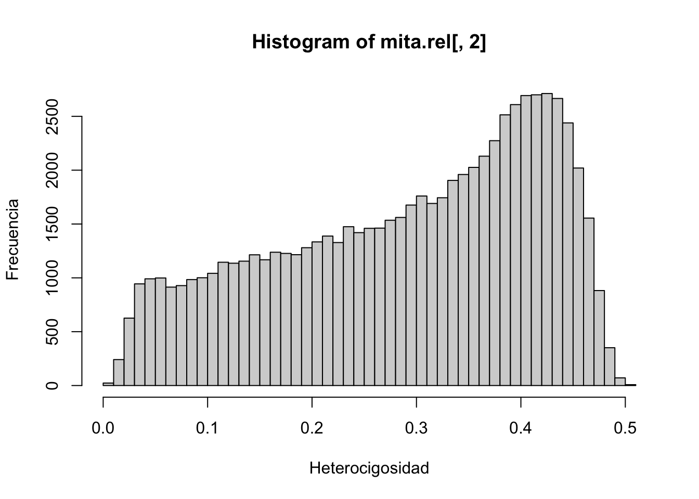
plot(mita.rel[,1]+(mita.rel[,2])/2,mita.rel[,2],cex=0.1,xlab="Frecuencia alelo REF",ylab="Frecuencia relativa Heterocigotos")
par(new=TRUE)
plot(mita.rel[,1]+(mita.rel[,2])/2,2*(mita.rel[,1]+(mita.rel[,2])/2)*(mita.rel[,3]+(mita.rel[,2])/2),col="red",cex=0.1,xaxt="n",yaxt="n",xlab="",ylab="")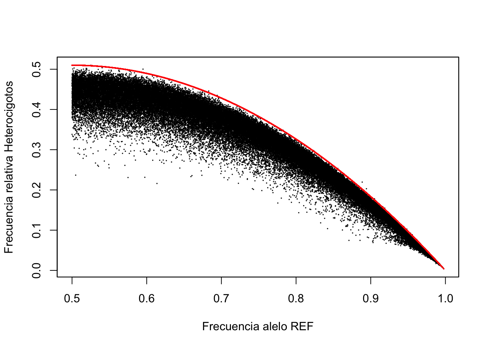
par(new=FALSE)¿Se encuentran los distintos marcadores en equilibrio de Hardy-Weinberg?
En particular, el archivo con el que estamos trabajando se trata de un subconjunto de marcadores (SNPs) en diferentes individuos, los que pertenecen a su vez a diferentes poblaciones. Se trata de un sub-conjunto de los marcadores ya que el total de los marcadores con información en muchísimo mayor y dificulta el trabajarlo a nivel de un práctico con máquinas de escasa memoria y capacidad de procesador. Más aún, si bien elegimos trabajar desde R para poder explorar mejor todos los pasos, existen otras alternativas de “software” que permiten cálculos más eficientes cuando los volúmenes de datos son masivos. Algunos de ellos, como plink, permiten trabajar desde R con facilidad (https://www.cog-genomics.org/plink/1.9/rserve).
1.2 El equilibrio de Hardy-Weinberg (breve introducción teórica)
La “ley de Hardy-Weinberg”, a veces conocida también como de Hardy-Weinberg-Castle por los trabajos de Castle (1903), Hardy (1908) y Weinberg (1908),4 es posiblemente uno de los resultados mejor conocidos de la genética de poblaciones. La misma permite predecir la composición de genotipos en un locus determinado, una vez alcanzado el equilibrio, a partir de la frecuencia de los alelos, cuando se cumplen una serie de condiciones, básicamente el apareamiento aleatorio entre los individuos de la población. La base de la misma es conceptualmente sencilla: en un individuo diploide, la probabilidad de observar un genotipo en particular en un locus autosómico determinado (es decir, no se encuentra en los cromosomas “sexuales”) es el producto de la frecuencia de los gametos que lo formaron. Pongamos un ejemplo sencillo para mostrarlo; supongamos un locus autosómico con dos alelos, \(A_1\) y \(A_2\), con frecuencias \(p\) y \(q\) (siendo \(q=1-p\) donde la suma de las frecuencias de los dos alelos debe ser 1 ya que asumimos que este locus solo tiene 2 alelos). Más aún, supongamos que se trata de una especie diploide hermafrodita, es decir, todos los individuos producen gametos masculinos y femeninos y para simplificar aún más asumamos que estos gametos se colocan en dos “pools”, uno de gametos masculinos y otro de gametos femeninos, todos los individuos produciendo exactamente la misma cantidad de gametos (para simplificar el efecto del tamaño poblacional asumimos también que dos gametos provenientes del mismo individuo, uno masculino y otro femenino se pueden combinar). Finalmente, aseguremos que los apareamientos sean completamente al azar, una condición que se conoce como panmixia. Para “crear” los individuos de la nueva generación extraemos un gameto de cada “pool”. Por lo tanto, la probabilidad de cada genotipo estará dada por la probabilidad de extraer esa combinación, que al tratarse de eventos independientes (el gameto masculino del femenino) es el producto de ambas probabilidades. Es decir:
\[\begin{equation} \begin{split} P(A_1A_1)=P(A_1)\cdot P(A_1)=p\cdot p=p^2\\ P(A_1A_2)=2\cdot P(A_1)\cdot P(A_2)=2\cdot p\cdot q=2pq\\ P(A_2A_2)=P(A_2)\cdot P(A_2)=q\cdot q=q^2\\ \end{split} \tag{1.1} \end{equation}\]
que es la expresión más sencilla de la ley de Hardy-Weinberg. Es de
notar que el factor 2 que aparece multiplicando la frecuencia de los
genotipos heterocigotos (\(A_1A_2\)) se debe a que existen dos formas de
obtener estos individuos: a) sacando un alelo \(A_1\) del “pool” masculino
y un \(A_2\) del “pool” femenino y b) sacando un alelo \(A_2\) del “pool”
masculino y un \(A_1\) del “pool” femenino, ambas con la misma
probabilidad (\(pq\)).
Lo primero que debemos verificar es que estas frecuencias sumen a 1, ya que no existen otros genotipos posibles (recordemos que \(q=1-p\)):
\[\begin{equation} p^2+2pq+q^2=p^2+2p(1-p)+(1-p)^2=p^2+2p-2p^2+1-2p+p^2=\\ =(2p^2-2p^2)+(2p-2p)+1=0+0+1=1 \end{equation}\]
Una vez verificado esto, el siguiente paso será determinar las nuevas frecuencias de los alelos \(A_1\) y \(A_2\), llamémosles \(p'\) y \(q'\). Lo podemos hacer sumando los aportes de alelos de cada genotipo (los heterocigotos aportan la mitad de su frecuencia para cada tipo de alelo, \(A_1\) y \(A_2\), mientras que los homocigotos aportan toda su frecuencia del respectivo alelo):
\[\begin{equation} p'=p^2+\frac{1}{2} 2pq=p^2+pq=p(p+q)=p(1)=p\\ q'=q^2+\frac{1}{2} 2pq=q^2+pq=q(q+p)=q(1)=q \end{equation}\]
Por lo tanto, después de una generación bajo este apareamiento al azar en nuestra especie hermafrodita, las frecuencias alélicas permanecen inalteradas, \(p=p'\) y \(q=q'\). Obviamente ocurrirá lo mismo para las siguientes generaciones, tanto a nivel de la frecuencia de los genotipos como de los alelos (las frecuencias de los genotipos solo dependen de las frecuencias de los alelos, como vimos en la ecuaciones (1.1) y siguientes), por lo que luego de una generación hemos alcanzado el equilibrio: esta condición se conoce como equilibrio de Hardy-Weinberg.
##
## Attaching package: 'grid'## The following object is masked from 'package:ff':
##
## patternFigura 1.1: Cuadrado de Punnett con frecuencias \(p=0,6\) y \(q=0,4\). Las áreas de los rectángulos/cuadrados representan las frecuencias de los genotipos. Figura tomada de Wikipedia (CC0), modificada a partir de Rosenberg and Kang (2015)
Una forma gráfica de ver estos resultados son los llamados “cuadrados de Punnett”5, como el que se aprecia en la figura 1.1. En la misma, en el eje horizontal tenemos la frecuencia con la que aparecen los gametos masculinos, mientras que en el vertical aparecen las frecuencias de los gametos femeninos; por lo tanto, el producto de estas frecuencias será el área de los rectángulos y cuadrados correspondientes (de geometría elemental, el área de cuadrados y rectángulos es el producto de dos lados contiguos). Se observa además claramente el origen del factor 2 en los heterocigotos (la suma de las 2 áreas coloreadas en rojo, cada una con valor \(pq\)).
Si tenemos un locus con \(n\) alelos:
¿Cuántos genotipos posibles tenemos?
¿Cuáles son las frecuencias esperadas para los distintos genotipos?
Ayuda: comenzar con \(n=3\) en un cuadrado de Punnett y luego pasar a la generalización.
Supuestos que asumimos se cumplen para H-W
Todos los genotipos poseen el mismo “fitness” (es decir, ningún genotipo posee una ventaja respecto al número de descendientes que deja)
La población debe estar formada por un número infinitamente grande de individuos
El apareamiento al azar debe producirse en toda la población
No debe existir migración que altere las frecuencias
Debe existir un equilibrio mutacional (es decir, las frecuencias de los alelos no varían pese a existir mutaciones).
1.3 Equilibrio de Hardy-Weinberg (PRÁCTICO)
En general, el apartamiento (en términos estadísticos) del equilibrio de Hardy-Weinberg representa el apartamiento de alguna de las condiciones que asumimos, por ejemplo la panmixia, o la ausencia de selección diferencial para los genotipos involucrados (así sea directamente o por desequilibrio de ligamiento), etc. En este sentido, es una práctica usual (aunque discutida) en predicción genómica el depurar el juego de marcadores utilizado, eliminando aquellos que se apartan significativamente de lo esperado para el equilibrio Hardy-Weinberg. Veamos si en nuestros datos los marcadores se encuentran en equilibrio de Hardy-Weinberg.
Para eso, lo primero que vamos a hacer es crear una función que dadas las frecuencias absolutas de los 3 genotipos de cada marcador (en forma ordenada, “0/0”, “0/1” y “1/1”) me genera una tabla con las frecuencias esperadas y las observadas.
eqHWtabla<-function(x){xt<-sum(x);p<-(x[1]+x[2]/2)/xt;y<-c(p^2*xt,2*p*(1-p)*xt,xt*(1-p)^2);ta<-rbind(x,y);rownames(ta)<-c("Ho","He");ta}La lógica de esta función es sencilla: calcular la frecuencia \(p\) de un alelo (el otro queda determinado como \(q=1-p\)) y a partir de esto calcular las frecuencias absolutas esperadas como \(xt\times p^2\), \(xt \times 2p(1-p)\) y \(xt \times (1-p)^2\), donde \(xt\) es la suma de las frecuencias de los genotipos. Finalmente, devuelve una tabla donde la primera fila se corresponde con las frecuencias absolutas observadas y la segunda con las frecuencias absolutas esperadas.
Veamos que ocurre si le aplicamos esta función a uno de los marcadores (por ejemplo, al primero) cuyas frecuencias genotípicas calculamos previamente.
mita[1,]## geno0/0 geno0/1 geno1/1
## 1634 601 125eqHWtabla(mita[1,])## geno0/0 geno0/1 geno1/1
## Ho 1634.000 601.0000 125.00000
## He 1585.716 697.5676 76.71621Si quisiéramos ahora conocer si las frecuencias observadas coinciden con las esperadas para el equilibrio de Hardy-Weinberg podríamos realizar un test sobre esta tabla, por el ejemplo el de \(\chi^2\), y observar el “p-value” correspondiente
chisq.test(eqHWtabla(mita[1,]))##
## Pearson's Chi-squared test
##
## data: eqHWtabla(mita[1, ])
## X-squared = 19.463, df = 2, p-value = 5.939e-05Podemos ahora aplicar la función a todos los marcadores y obtener un vector con los p-valores correspondientes a cada marcador
HWmarcadores<-apply(mita,1,function(x) chisq.test(eqHWtabla(x))$p.value)En este caso, utilizamos la función apply() sobre la tabla completa de genotipos de los marcadores. Esta función toma la tabla como primer argumento, el segundo especifica si quiero trabajar sobre filas (1) o sobre columnas (2) y el tercer argumento especifica la función que quiero aplicar. Como en nuestro caso queremos aplicar la composición de dos funciones, es decir aplicarle la función chisq.test() al resultados de la función eqHWtabla(), entonces especificamos que para cada fila x vamos a calcular chisq.test(eqHWtabla(x)) y de eso quedarnos con el resultado almacenado en el ‘slot’ p.value.
Veamos la distribución de los valores p para el conjunto de marcadores. Una manera sencilla es realizar un histograma, lo que conseguimos con
hist(HWmarcadores,100,main="HW en marcadores",xlab="p-values",ylab="Frecuencia")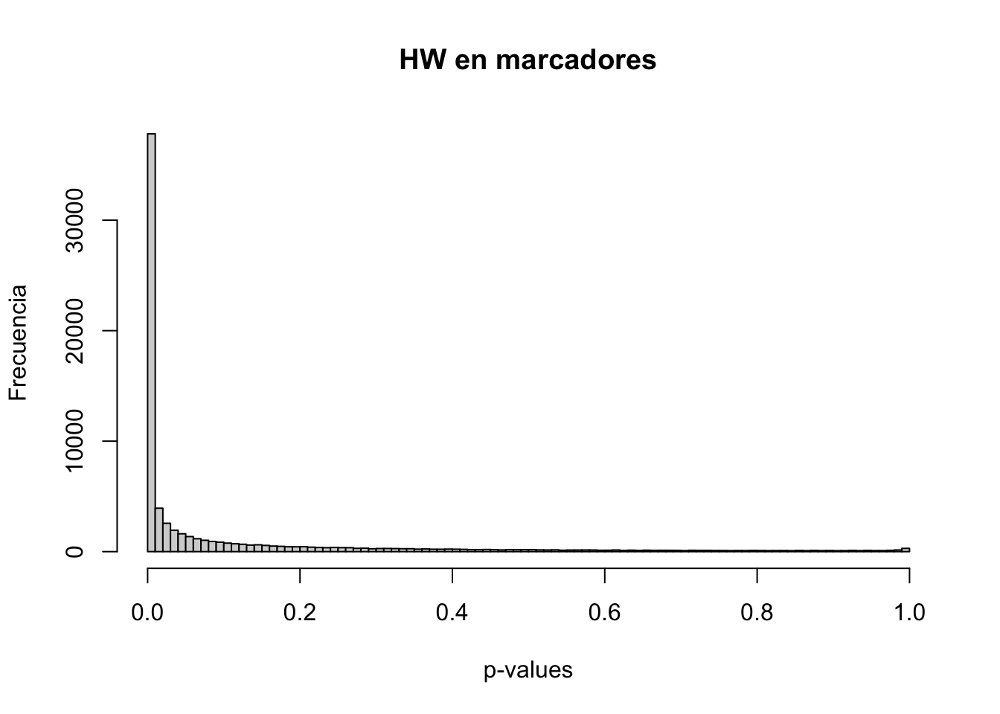
Normalmente, cuando la distribución de los genotipos observada en los distintos marcadores sigue aproximadamente las frecuencias esperadas para el equilibrio de Hardy-Weinberg, la distribución de los p-valores se asemeja a una distribución uniforme. En nuestro caso, esto es claramente diferente a lo que observamos, donde tenemos un número enorme de marcadores que aparecen como significativos en primera instancia. Podemos ver la proporción de los mismos que aparece como por debajo del umbral \(0.01\) haciendo
sum(HWmarcadores<1e-2)/length(HWmarcadores)## [1] 0.5193491Obviamente, como tenemos miles de marcadores, si fijamos un umbral para determinar la significancia de los p-valores obtenidos, la probabilidad de observar por azarvalores inferiores al umbral se incrementa en forma sustancial y debemos corregir los mismos por el efecto de ensayos múltiples (“multiple testing”). Una alternativa sencilla es usar la función p.adjust(), eligiendo el método de corrección que sea de nuestro interés. Una corrección muy drástica suele ser el método de “Bonferroni” que consiste en ajustar el valor del umbral dividiéndolo entre el número de ensayos de hipótesis, o lo que es similar, multiplicando cada p-valor por el número de marcadores. En nuestro caso, podemos hacer
pval.bonferroni<-p.adjust(HWmarcadores, method ="bonferroni")
sum(pval.bonferroni<1e-2)/length(pval.bonferroni)## [1] 0.1483796Claramente, la frecuencia de marcadores significativos bajó, pero aún así la proporción es enorme, lo que denota que en general nuestro juego de marcadores no está en equilibrio de Hardy-Weinberg.
¿Cuál podría ser la razón?
1.4 Pasaje de los genotipos a forma numérica
El formato en el que están descritos los genotipos en el archivo VCF (“0/0”, “0/1” y “1/1”) dificulta su trabajo en forma numérica. En el caso de que trabajemos con marcadores bi-estado (o bi-alélicos), es decir que solo existen dos alelos posibles para cada marcador, resulta intuitivo considerar el número de copias de unos de los dos posibles, por ejemplo el alternativo (ALT), como una variable numérica, discreta con solo 3 valores posibles:
- 0 para los genotipos “0/0”
- 1 para los genotipos “0/1”
- 2 para los genotipos “1/1”
Más adelante veremos como esto nos simplifica la vida, pero por ahora nos vamos a limitar a hacer dicha transformación para nuestra matriz de genotipos:
ngeno<-genot
ngeno[ngeno=="0/0"]<-0
ngeno[ngeno=="0/1"]<-1
ngeno[ngeno=="1/1"]<-2
ngenot<-apply(ngeno,2,as.numeric)
rownames(ngenot)<-rownames(genot)
genot[1:10,1:12]## 1_C1 2_C2 3_C3 4_C4 5_C5 6_C6 7_C7 8_C8 9_C9 10_C10 11_HGDP00479
## rs9442380 0/0 0/1 0/0 0/0 0/1 0/0 0/0 0/1 0/0 0/1 0/0
## rs2887286 1/1 0/0 1/1 1/1 1/1 0/1 1/1 0/1 0/1 0/1 1/1
## rs2803291 0/0 0/0 1/1 0/1 0/0 0/0 0/0 0/1 1/1 0/1 0/0
## rs908742 0/0 0/0 0/0 0/1 0/1 0/0 0/0 0/0 0/1 0/1 0/0
## rs262654 0/0 0/0 0/0 0/1 0/1 0/1 0/1 0/0 0/1 0/1 0/0
## rs263526 0/0 0/1 0/1 0/1 0/1 0/1 0/1 0/1 0/0 0/1 0/1
## rs10797417 0/0 0/0 0/0 0/0 0/0 0/0 0/0 0/0 0/0 0/0 0/0
## rs11588312 0/1 0/0 0/0 0/0 0/1 0/0 0/0 0/0 0/0 0/0 0/1
## rs2017143 0/0 0/1 0/0 1/1 0/1 1/1 1/1 0/0 1/1 1/1 0/1
## rs903919 0/1 0/0 0/0 0/0 0/0 0/0 0/0 0/0 0/0 0/0 0/0
## 12_HGDP00985
## rs9442380 0/0
## rs2887286 0/0
## rs2803291 0/0
## rs908742 0/0
## rs262654 0/0
## rs263526 0/0
## rs10797417 0/1
## rs11588312 0/0
## rs2017143 0/1
## rs903919 0/0ngenot[1:10,1:12]## 1_C1 2_C2 3_C3 4_C4 5_C5 6_C6 7_C7 8_C8 9_C9 10_C10 11_HGDP00479
## rs9442380 0 1 0 0 1 0 0 1 0 1 0
## rs2887286 2 0 2 2 2 1 2 1 1 1 2
## rs2803291 0 0 2 1 0 0 0 1 2 1 0
## rs908742 0 0 0 1 1 0 0 0 1 1 0
## rs262654 0 0 0 1 1 1 1 0 1 1 0
## rs263526 0 1 1 1 1 1 1 1 0 1 1
## rs10797417 0 0 0 0 0 0 0 0 0 0 0
## rs11588312 1 0 0 0 1 0 0 0 0 0 1
## rs2017143 0 1 0 2 1 2 2 0 2 2 1
## rs903919 1 0 0 0 0 0 0 0 0 0 0
## 12_HGDP00985
## rs9442380 0
## rs2887286 0
## rs2803291 0
## rs908742 0
## rs262654 0
## rs263526 0
## rs10797417 1
## rs11588312 0
## rs2017143 1
## rs903919 0
1.5 Muestras y poblaciones en nuestros datos
Investiguemos un poco más. Para ello vamos a cargar la tabla que contiene la información de las poblaciones y proyectos a los que pertenecen las distintas muestras que se encuentran en IGSR: The International Genome Sample Resource (https://www.internationalgenome.org/data-portal/sample). No te olvides de cambair el “path” al adecuado en tu máquina.
ta<-read.delim("~/cursos/cursoHumanWholeExomeAnalysis2022/data/samples1000G.txt")
dim(ta)## [1] 4978 9head(ta)## Sample.name Sex Biosample.ID Population.code Population.name
## 1 HG00271 male SAME123417 FIN Finnish
## 2 HG00276 female SAME123424 FIN Finnish
## 3 HG00288 female SAME1839246 FIN Finnish
## 4 HG00290 male SAME1839057 FIN Finnish
## 5 HG00303 male SAME1840115 FIN Finnish
## 6 HG00308 male SAME124161 FIN Finnish
## Superpopulation.code Superpopulation.name Population.elastic.ID
## 1 EUR European Ancestry FIN
## 2 EUR European Ancestry FIN
## 3 EUR European Ancestry FIN
## 4 EUR European Ancestry FIN
## 5 EUR European Ancestry FIN
## 6 EUR European Ancestry FIN
## Data.collections
## 1 1000 Genomes on GRCh38,1000 Genomes 30x on GRCh38,1000 Genomes phase 3 release,1000 Genomes phase 1 release,Geuvadis
## 2 1000 Genomes on GRCh38,1000 Genomes 30x on GRCh38,1000 Genomes phase 3 release,1000 Genomes phase 1 release,Geuvadis
## 3 1000 Genomes on GRCh38,1000 Genomes 30x on GRCh38,1000 Genomes phase 3 release
## 4 1000 Genomes on GRCh38,1000 Genomes 30x on GRCh38,1000 Genomes phase 3 release
## 5 1000 Genomes on GRCh38
## 6 1000 Genomes on GRCh38,1000 Genomes 30x on GRCh38,1000 Genomes phase 3 release,GeuvadisClaramente, si nos fijamos en los identificadores de nuestras muestras (es decir, de las muestras que tenemos en la tabla de genotipos), el identificador similar al usado por el IGSR sería la secuencia de caracteres que se encuentra luego del primer guión bajo (“_“), por lo que debemos retener esa parte del identificador y ver si lo encontramos en la tabla del IGSR:
colnames(genot)[1:40]## [1] "1_C1" "2_C2" "3_C3" "4_C4" "5_C5"
## [6] "6_C6" "7_C7" "8_C8" "9_C9" "10_C10"
## [11] "11_HGDP00479" "12_HGDP00985" "13_HGDP01094" "14_HGDP00982" "15_HGDP00911"
## [16] "16_HGDP01202" "17_HGDP00927" "18_HGDP00461" "19_HGDP00986" "20_HGDP00449"
## [21] "21_HGDP00912" "22_HGDP01283" "23_HGDP00928" "24_HGDP00937" "25_HGDP01408"
## [26] "26_HGDP00991" "27_HGDP01031" "28_HGDP01263" "29_HGDP01275" "30_HGDP00611"
## [31] "31_HGDP00623" "32_HGDP00634" "33_HGDP00645" "34_HGDP00557" "35_HGDP00569"
## [36] "36_HGDP00581" "37_HGDP00594" "38_HGDP00675" "39_HGDP00687" "40_HGDP00697"nombresengenot<-unlist(lapply(colnames(genot),function(x)strsplit(x,"_")[[1]][2]))
head(nombresengenot,40)## [1] "C1" "C2" "C3" "C4" "C5" "C6"
## [7] "C7" "C8" "C9" "C10" "HGDP00479" "HGDP00985"
## [13] "HGDP01094" "HGDP00982" "HGDP00911" "HGDP01202" "HGDP00927" "HGDP00461"
## [19] "HGDP00986" "HGDP00449" "HGDP00912" "HGDP01283" "HGDP00928" "HGDP00937"
## [25] "HGDP01408" "HGDP00991" "HGDP01031" "HGDP01263" "HGDP01275" "HGDP00611"
## [31] "HGDP00623" "HGDP00634" "HGDP00645" "HGDP00557" "HGDP00569" "HGDP00581"
## [37] "HGDP00594" "HGDP00675" "HGDP00687" "HGDP00697"sum(nombresengenot%in%ta$Sample.name)## [1] 1591muestras.que.estan<-colnames(genot)[which(nombresengenot%in%ta$Sample.name)]
length(muestras.que.estan)## [1] 1591muestras.que.NO.estan<-colnames(genot)[which(!nombresengenot%in%ta$Sample.name)]
length(muestras.que.NO.estan)## [1] 770Es decir, de todas nuestras muestras, en la tabla del IGSR pudimos identificar 1591 de nuestras muestras que se encuentran en dicha tabla, mientras que 770 no se encuentran en la tabla del Proyecto 1000genomas. Vamos a subsetear nuestros datos para trabajar con las muestras que nos interesan, que en este caso son las que pudimos identificar su origen. De paso, vamos a ver como podemos utilizar el hecho de que nuestros marcadores son todo bi-alélicos para nuestro provecho.
ngenot.estan<-ngenot[,muestras.que.estan]
colnames(ngenot.estan)<-nombresengenot[which(nombresengenot%in%ta$Sample.name)]
dim(ngenot)## [1] 72820 2361dim(ngenot.estan)## [1] 72820 1591Para facilitar las cosas vamos a reducir también nuestra tabla de muestras a solo aquellas muestras que tenemos identificadas:
tb<-ta[which(ta$Sample.name%in%nombresengenot),]
rownames(tb)<-tb$Sample.name
tb<-tb[nombresengenot[which(nombresengenot%in%ta$Sample.name)],]
head(tb)## Sample.name Sex Biosample.ID Population.code Population.name
## HGDP00479 HGDP00479 male Biaka
## HGDP00985 HGDP00985 male Biaka
## HGDP01094 HGDP01094 male Biaka
## HGDP00982 HGDP00982 male SAMEA3302833 Mbuti
## HGDP00911 HGDP00911 male Mandenka
## HGDP01202 HGDP01202 male Mandenka
## Superpopulation.code Superpopulation.name Population.elastic.ID
## HGDP00479 Africa (HGDP) BiakaHGDP
## HGDP00985 Africa (HGDP) BiakaHGDP
## HGDP01094 Africa (HGDP) BiakaHGDP
## HGDP00982 Africa (SGDP) MbutiSGDP
## HGDP00911 Africa (HGDP) MandenkaHGDP
## HGDP01202 Africa (HGDP) MandenkaHGDP
## Data.collections
## HGDP00479 Human Genome Diversity Project
## HGDP00985 Human Genome Diversity Project
## HGDP01094 Human Genome Diversity Project
## HGDP00982 Simons Genome Diversity Project
## HGDP00911 Human Genome Diversity Project
## HGDP01202 Human Genome Diversity ProjectClaramente, ahora podemos apreciar que nuestros genotipos se corresponden con individuos que provienen de diferentes poblaciones. Para ver la distribución de las muestras en las diferentes poblaciones podemos hacer:
table(tb$Population.code)##
## ASW CEU CHB GIH JPT LWK MXL TSI YRI
## 884 34 108 83 82 85 73 49 88 105table(tb$Population.name)##
## Adygei African Ancestry SW Balochi
## 17 34 21
## Bantu Herero Bantu Kenya Bantu South Africa
## 2 9 4
## Bantu Tswana Basque Bedouin
## 2 24 43
## Bedouin B Bergamo Bergamo Italian
## 2 2 9
## Biaka Bougainville Brahui
## 21 10 23
## Burusho Cambodian Cambodian,Cambodian
## 24 9 1
## CEPH Colombian Dai
## 108 5 9
## Daur Druze French
## 9 42 27
## Gujarati Han Han Chinese
## 82 33 83
## Hazara Hezhen Japanese
## 15 8 112
## Japanese,Japanese Ju|'hoan North Ju|'hoan North,San
## 1 2 1
## Kalash Karitiana Lahu
## 22 11 8
## Luhya Luhya,Luhya Makrani
## 72 1 20
## Mandenka Maya Mayan,Maya
## 21 15 2
## Mbuti Mbuti,Mbuti Mexican Ancestry
## 11 2 49
## Miao Mongola Mongolian
## 10 2 5
## Mozabite Mozabite,Mozabite Naxi
## 24 1 8
## Northern Han Orcadian Oroqen
## 10 15 9
## Palestinian Papuan Papuan Sepik
## 42 3 1
## Papuan,Papuan Highlands Papuan,Papuan Sepik Pathan
## 6 6 21
## Pathan,Pathan Piapoco Pima
## 1 2 12
## Russian San Sardinian
## 25 2 27
## She Sindhi Surui
## 10 22 8
## Toscani Tu Tujia
## 88 10 10
## Tuscan Uygur Xibo
## 8 10 9
## Yakut Yi Yoruba
## 21 10 125Se aprecia que 884 muestras no tienen código de población asignado. ¿A que poblaciones (“Population.name”) pertenecen dichas muestras?
Una forma fácil de responder esta pregunta es hacer:
table(tb[tb$Population.code=="","Population.name"])##
## Adygei Balochi Bantu Herero
## 17 21 2
## Bantu Kenya Bantu South Africa Bantu Tswana
## 9 4 2
## Basque Bedouin Bedouin B
## 24 43 2
## Bergamo Bergamo Italian Biaka
## 2 9 21
## Bougainville Brahui Burusho
## 10 23 24
## Cambodian Cambodian,Cambodian Colombian
## 9 1 5
## Dai Daur Druze
## 9 9 42
## French Han Hazara
## 27 33 15
## Hezhen Japanese Ju|'hoan North
## 8 28 2
## Ju|'hoan North,San Kalash Karitiana
## 1 22 11
## Lahu Makrani Mandenka
## 8 20 21
## Maya Mayan,Maya Mbuti
## 15 2 11
## Mbuti,Mbuti Miao Mongola
## 2 10 2
## Mongolian Mozabite Mozabite,Mozabite
## 5 24 1
## Naxi Northern Han Orcadian
## 8 10 15
## Oroqen Palestinian Papuan
## 9 42 3
## Papuan Sepik Papuan,Papuan Highlands Papuan,Papuan Sepik
## 1 6 6
## Pathan Pathan,Pathan Piapoco
## 21 1 2
## Pima Russian San
## 12 25 2
## Sardinian She Sindhi
## 27 10 22
## Surui Tu Tujia
## 8 10 10
## Tuscan Uygur Xibo
## 8 10 9
## Yakut Yi Yoruba
## 21 10 20Más arriba describíamos el “problema” de la falta de equilibrio Hardy-Weinberg en los marcadores considerados, pero uno de los supuestos del equilibrio de Hardy-Weinberg es que los apareamientos sean al azar, es decir en condiciones de “panmixia”. Observando el origen de nuestras muestras resulta claro de que esto es claramente imposible de que se cumpla, ya que aún en las muestras identificadas en el IGSR tenemos 78 poblaciones diferentes y es totalmente improbable que los individuos de las mismas se apareen con la misma probabilidad con individuos de la misma población que con individuos de cualquier otra población.
Antes de seguir con este problema vamos a hacer una pequeña disgresión, para ver cómo el formato numérico de los genotipos me permite hacer cálculos eficientes. Veamos el problema de calcular las frecuencias de los alelos (de referencia o el alternativo) con nuestros datos seleccionados. De acuerdo con nuestro esquema de codificación numérica, el cero corresponde a ninguna copia del alelo alternativo (o lo que es lo mismo, a dos copias del de referencia), el uno se corresponde a una copia del alelo alternativo (y la otra del de referencia) y el dos se corresponde a dos copias del alelo alternativo (y ninguna del de referencia). Si tenemos \(N\) individuos diploides (los humanos somos diploides, y en nuestro genotipado es la situación mayoriataria, exceptuando el genoma mitocondrial), entonces tendremos un total de \(2N\) alelos. Por lo tanto, para cada marcador, la frecuencia del alelo alternativo será igual a la suma de los genotipos numéricos de todos los individuos, dividido entre \(2N\). Para calcular estas frecuencias para todos los marcadores, podemos hacer:
freqSNPS<-apply(ngenot.estan,1,function(x)sum(x)/(2*length(x)))
hist(freqSNPS,100,main="Histograma de frequencia del alelo ALT",xlab="frecuencia del ALT",ylab="Frecuencia")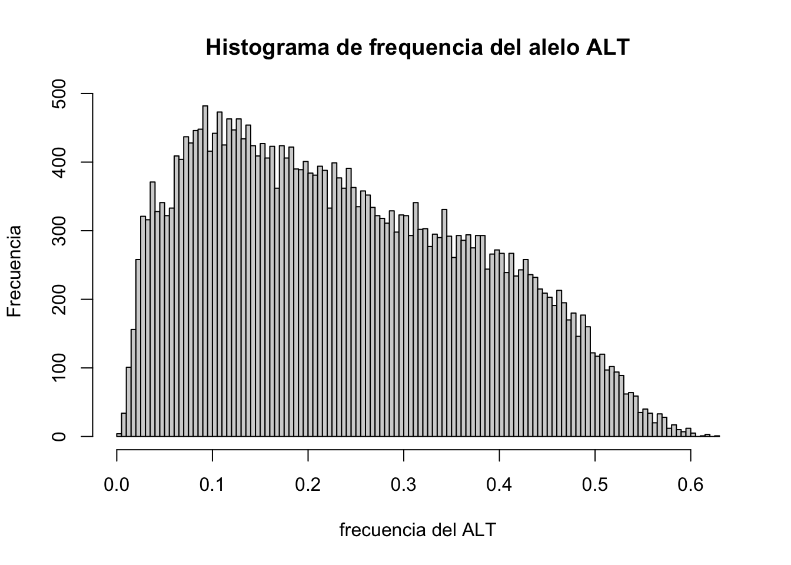
Sin embargo, la función para calcular las frecuencias como la escribimos más arriba tiene el problema de no poder resolver genotipos faltantes (NA). Una versión mejorada de la misma sería:
freqSNPS<-apply(ngenot.estan,1,function(x)sum(x,na.rm=TRUE)/(2*sum(!is.na(x))))
hist(freqSNPS,100,main="Histograma de frequencia del alelo ALT",xlab="frecuencia del ALT",ylab="Frecuencia")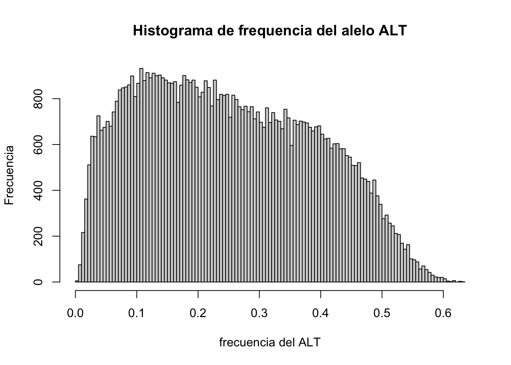
En el histograma anterior se aprecia claramente que las frecuencias van desde cero hasta 0.63, lo que nos da una idea muy clara de que REF y ALT no se refieren al alelo mayoritario o minoritario. Una forma obvia de analizar estos datos es estudiar la frecuencia del alelo menor, MAF. En nuestro caso, al existir solo dos alelos por locus, la suma de las frecuencias relativas debe ser igual a uno, por lo que si la frecuencia de ALT es mayor a \(\frac{1}{2}=0.5\), entonces el alelo menor será el de REF y al revés, si es menor a \(\frac{1}{2}\) entonces el alelo menor ser el ALT. En términos del EBI:
“When working with genome scale data the term reference allele refers to the base that is found in the reference genome. Since the reference is just somebody’s genome, it is not always the major allele. In contrast, the alternative allele refers to any base, other than the reference, that is found at that locus.”
Al tratarse de una convención algo arbitraria es de esperar en cierta forma una bimodalidad de los datos, que si miramos con atención se observa en el histograma anterior. Una forma de superar esto es calcular la frecuencia del alelo menor (o del mayor). Para calcular la frecuencia del alelo menor (MAF), podemos hacer simplemente:
maf<-freqSNPS
maf[which(maf>0.5)]<-1-maf[which(maf>0.5)]
hist(maf,100,main="Histograma de frequencia del alelo menor",xlab="MAF",ylab="Frecuencia")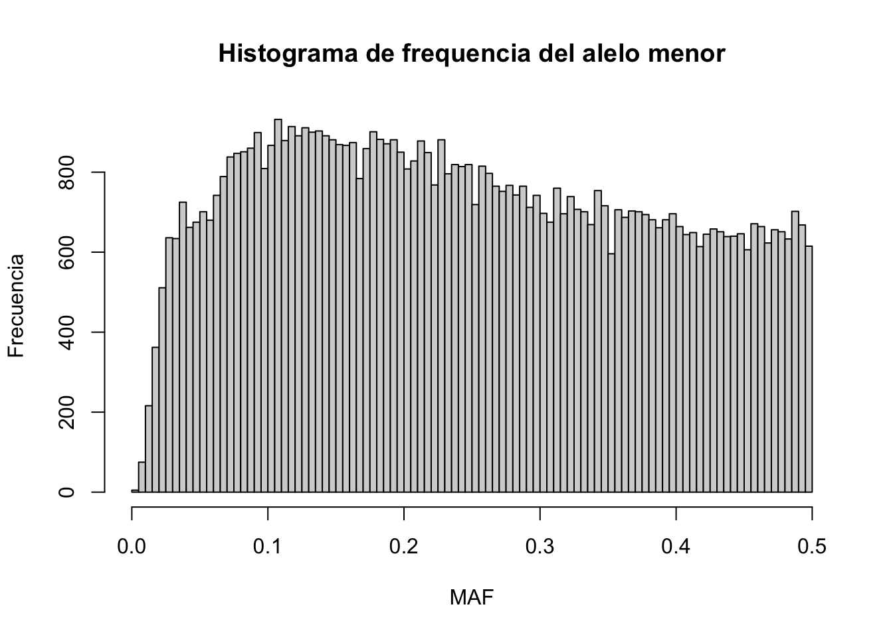
Volvamos ahora al tema de las distintas poblaciones y veamos si afecta en algo las frecuencias de los alelos en las mismas. Para evitar frecuencias extremas derivadas del bajo número de individuos (por ejemplo, con dos individuos las frecuencias posibles del MAF son \(0\), \(1/4=0.25\) y \(1/2=0.5\)), vamos a trabajar solo con las poblaciones que tienen más de 20 individuos en nuestra base:
table(tb$Population.name)[table(tb$Population.name)>20]##
## African Ancestry SW Balochi Basque Bedouin
## 34 21 24 43
## Biaka Brahui Burusho CEPH
## 21 23 24 108
## Druze French Gujarati Han
## 42 27 82 33
## Han Chinese Japanese Kalash Luhya
## 83 112 22 72
## Mandenka Mexican Ancestry Mozabite Palestinian
## 21 49 24 42
## Pathan Russian Sardinian Sindhi
## 21 25 27 22
## Toscani Yakut Yoruba
## 88 21 125popmas20<-names(table(tb$Population.name)[table(tb$Population.name)>20])
popmas20## [1] "African Ancestry SW" "Balochi" "Basque"
## [4] "Bedouin" "Biaka" "Brahui"
## [7] "Burusho" "CEPH" "Druze"
## [10] "French" "Gujarati" "Han"
## [13] "Han Chinese" "Japanese" "Kalash"
## [16] "Luhya" "Mandenka" "Mexican Ancestry"
## [19] "Mozabite" "Palestinian" "Pathan"
## [22] "Russian" "Sardinian" "Sindhi"
## [25] "Toscani" "Yakut" "Yoruba"Calculemos ahora para todas ellas las frecuencias del alelo menor para todas las poblaciones.
fMAF<-matrix(0,nrow=length(maf),ncol=length(popmas20))
dim(fMAF)## [1] 72820 27fFreq<-matrix(0,nrow=length(maf),ncol=length(popmas20))
for (i in 1:length(popmas20)){muestras<-tb[tb$Population.name==popmas20[i],"Sample.name"];fSNPS<-apply(ngenot.estan[,muestras],1,function(x)sum(x,na.rm=TRUE)/(2*sum(!is.na(x))));fFreq[,i]<-fSNPS;mafs<-fSNPS;mafs[which(mafs>0.5)]<-1-mafs[which(mafs>0.5)];fMAF[,i]<-mafs}
colnames(fFreq)<-colnames(fMAF)<-popmas20Una verificación obvia de que el promedio ponderado de las frecuencias en las poblaciones es igual a la frecuencia promedio sobre todos los datos usados se puede calcular así:
# PESOS PONDERADOS DE LAS POBLACIONES
pesos<-as.numeric(table(tb$Population.name)[table(tb$Population.name)>20])
ffp<-(fFreq%*%pesos)/sum(pesos)
hist(ffp,100)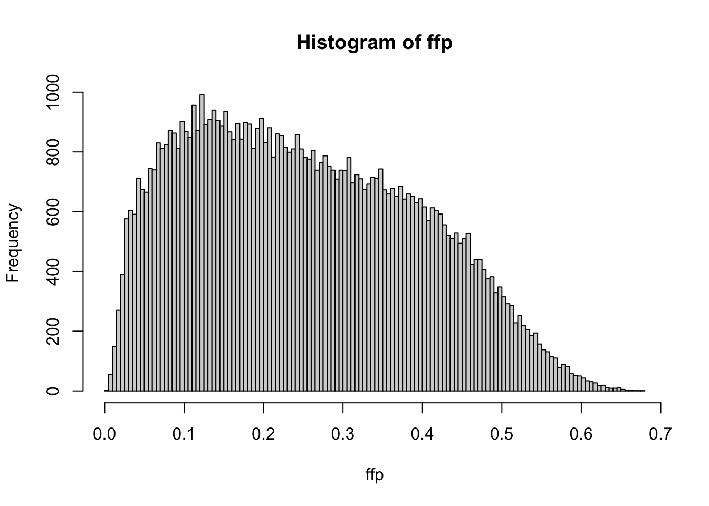
# FRECUENCIA SOBRE TODOS LOS DATOS CONSIDERADOS
freqSNPSpopmas20<-apply(ngenot.estan[,tb[tb$Population.name%in%popmas20,"Sample.name"]],1,function(x)sum(x,na.rm=TRUE)/(2*sum(!is.na(x))))
plot(freqSNPSpopmas20,ffp,cex=0.2,xlab="media para todas las muestras consideradas",ylab="promedio ponderado")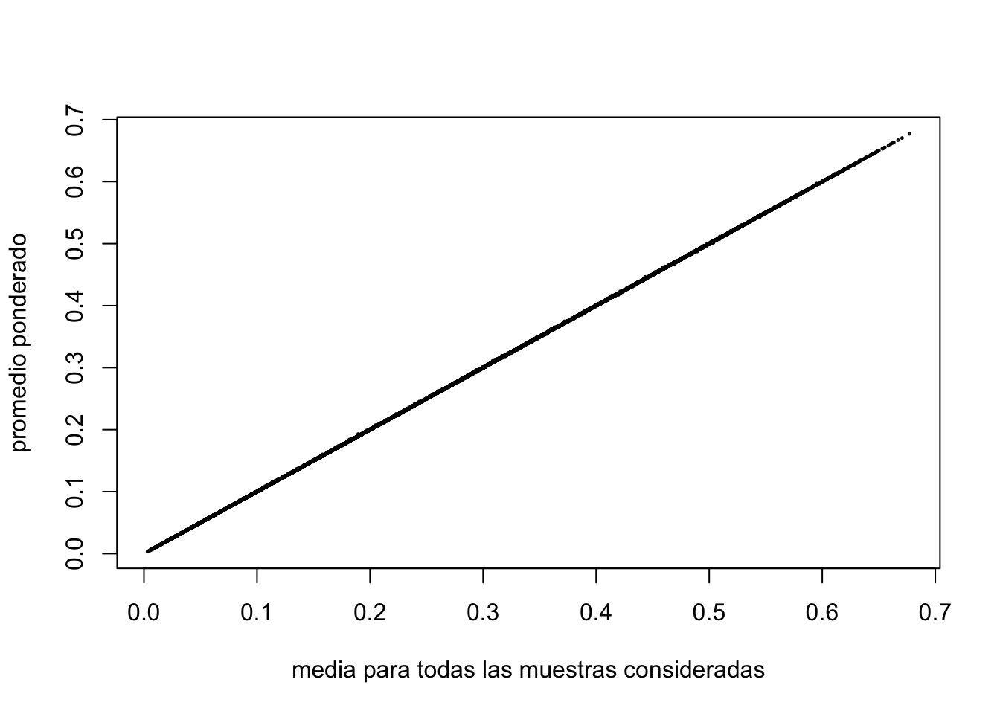
Notar que para evitar usar un bucle “for” que lleva muchísimo tiempo, para la verificación usamos el producto matricial, mediante el operador “%*%“, lo que acelera muchísimo los resultados. Verificado esto (ver la línea de regresión perfecta sobre la diagonal), podemos estudiar un poco la variabilidad de las frecuencias en las distintas poblaciones respecto a la frecuencia media en los datos.
Por ejemplo, la población con más individuos en nuestra muestra es la Yoruba con 125 individuos. Veamos la variación de la frecuencia del alternativo en esta población respecto a dicha frecuencia en el promedio.
popNmax<-names(sort(table(tb$Population.name)[table(tb$Population.name)>20],TRUE)[1])
plot(freqSNPSpopmas20,fFreq[,popNmax],cex=0.2,col="darkblue")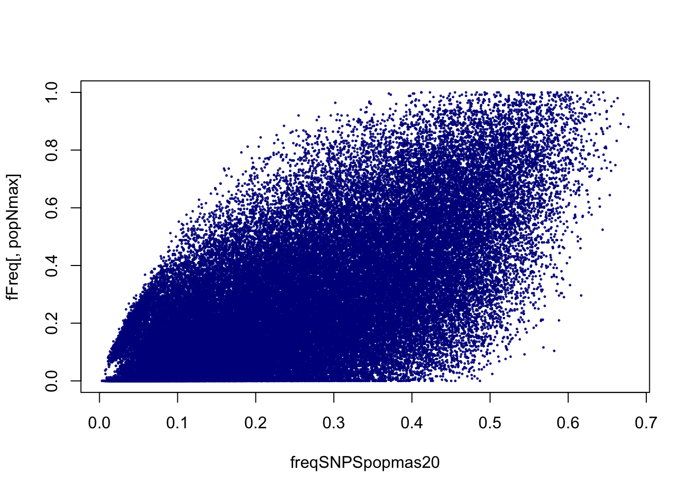
Veamos ahora lo que ocurre para una de las poblaciones con número mínimo de genomas en nuestros datos:
popNmin<-names(sort(table(tb$Population.name)[table(tb$Population.name)>20],FALSE)[1])
popNmin## [1] "Balochi"plot(freqSNPSpopmas20,fFreq[,popNmin],cex=0.2,col="darkred")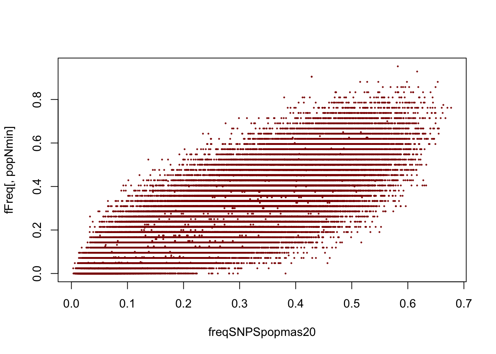
Claramente, en ambos casos se observa una enorme dispersión de los datos respecto al promedio, lo que nos indica claramente que las frecuencias promedio calculadas sobre poblaciones muy distintas, usándolas en conjunto, son un muy mal estimador de lo que podemos esperar del resto de los parámetros genéticos de interés. En la medida de que las poblaciones consideradas son más cercanas, desde el punto de vista genético, las frecuencias de los distintos alelos se distribuyen de una forma ajusta sobre la recta de regresión entre ellas. Por ejemplo, para las poblaciones de franceses y toscanos, podemos observar lo siguiente:
plot(fFreq[,"French"],fFreq[,"Toscani"],cex=0.2,col="darkgreen",xlab="French",ylab="Toscani",main="Frecuencias alelos ALT")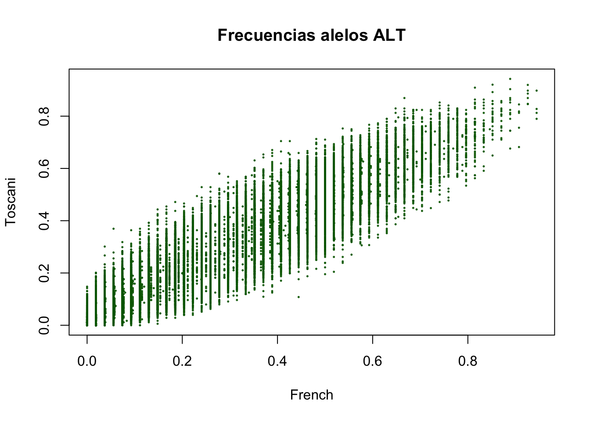
De hecho, si utilizamos la matriz de frecuencias de los alelos alternativos para las distintas poblaciones, podemos tener una primera aproximación a la relación genética entre poblaciones haciendo un “dendrograma” de cómo se agrupan de acuerdo a las distancias entre frecuencias alélicas.
midist<-dist(t(fFreq))
miclus<-hclust(midist)
plot(miclus,sub="",xlab="distancia entre frecuencias",main="Poblaciones",cex=0.75)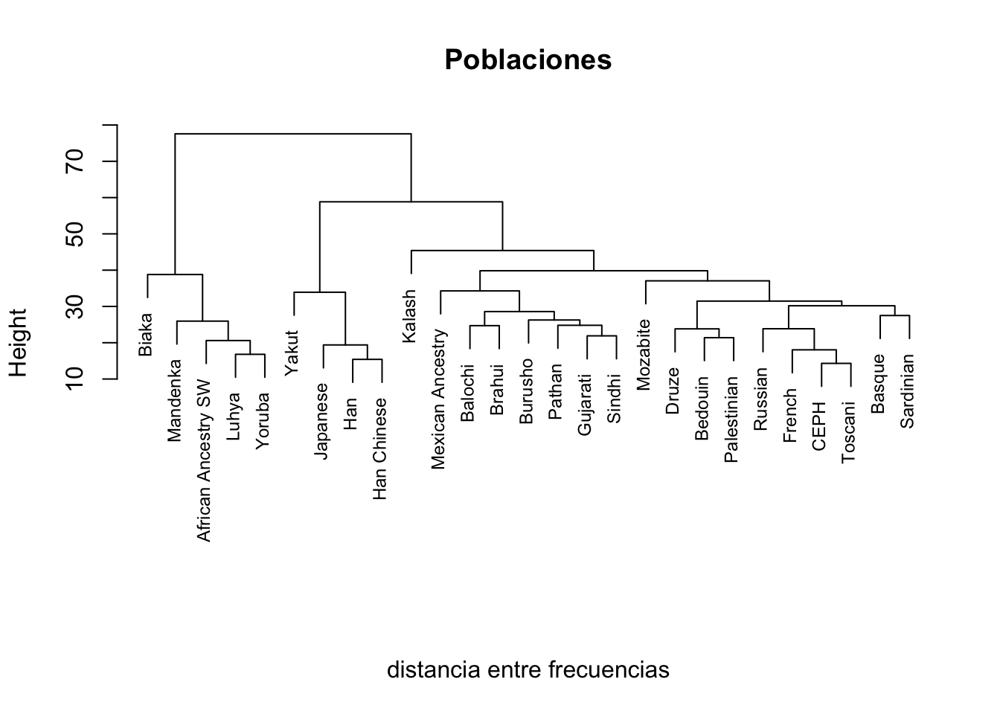
Podemos utilizar este agrupamiento anterior para ver que ocurre entre dos poblaciones que aparecen como muy cercanas, como la CEPH (centro-europeos) y la toscana,
plot(fFreq[,"CEPH"],fFreq[,"Toscani"],cex=0.2,col="green4",xlab="CEPH",ylab="Toscani",main="Frecuencias alelos ALT")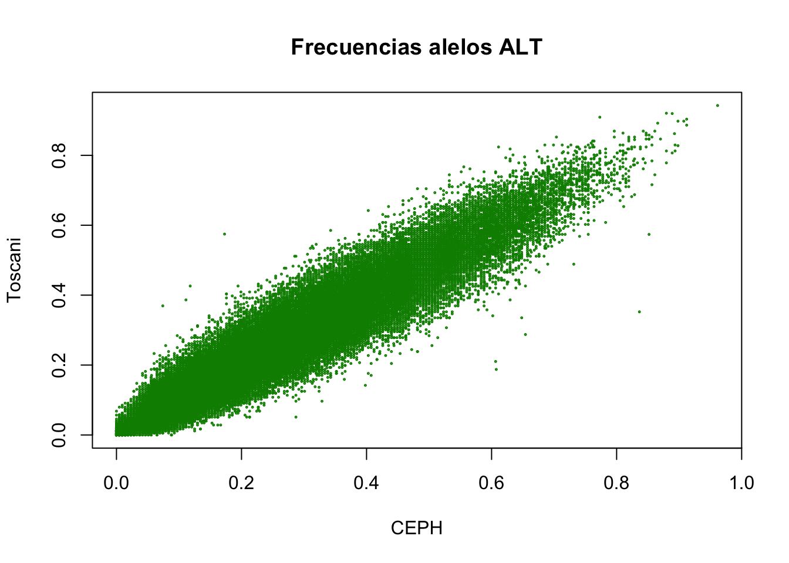
las poblaciones Han y Han Chinese,
plot(fFreq[,"Han"],fFreq[,"Han Chinese"],cex=0.2,col="yellow4",xlab="Han",ylab="Han Chinese",main="Frecuencias alelos ALT")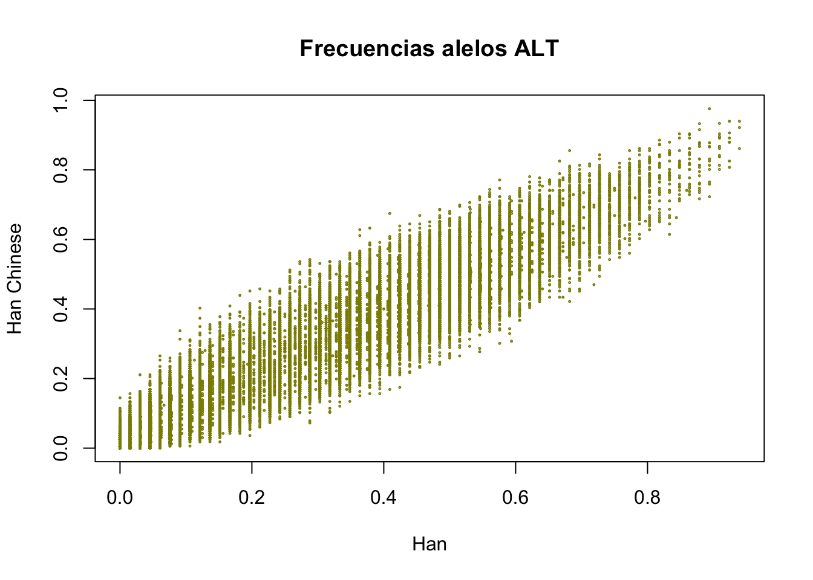
o como la Luhya y la Yoruba:
plot(fFreq[,"Yoruba"],fFreq[,"Luhya"],cex=0.2,col="blue2",xlab="Yoruba",ylab="Luhya",main="Frecuencias alelos ALT")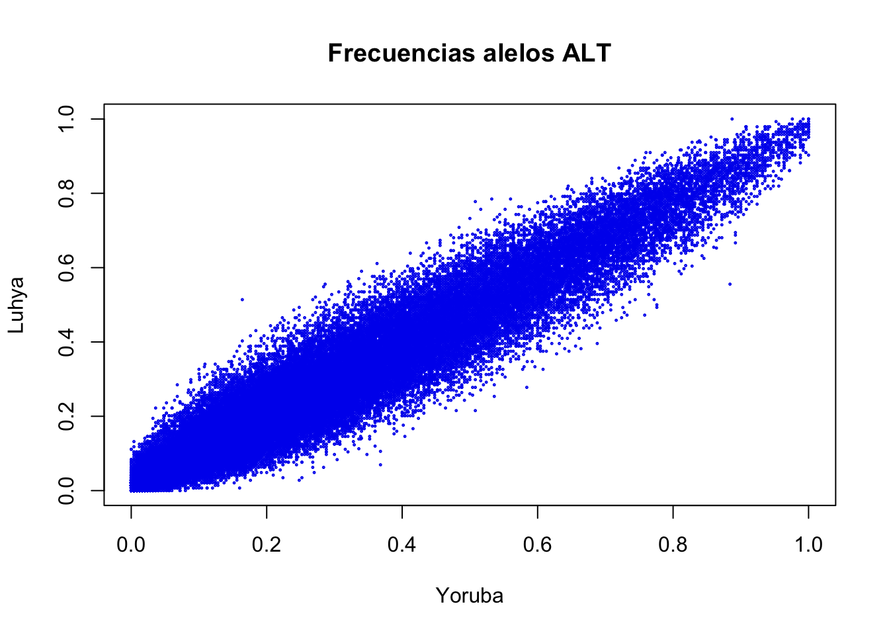
De hecho, estos últimos dos pueblos son originarios del África. Mientras los Yorubas habitan los actuales territorios de Nigeria, Benin y Togo (en el occidente de África), los Luhya, que comprenden un número importante de grupos étnicos “Bantú”, habitan principalmente en la provincia occidental de Kenia, país que se encuentra del otro lado del continente.
Antes, habíamos encontrado que los marcadores no estaban en equilibrio de Hardy-Weinberg cuando considerábamos el global de la población y explicamos la posible razón.
Analizar si los marcadores en la población Yoruba se encuentran en equilibrio de Hardy-Weinberg
#### YORUBA ####
genot.Yoruba<-genot[,which(unlist(lapply(colnames(genot),function(x)strsplit(x,"_")[[1]][2]))%in%tb[tb$Population.name=="Yoruba","Sample.name"])]
mita.Yoruba<-t(apply(genot.Yoruba,1,function(x) table(x)[c("0/0","0/1","1/1")]))
colnames(mita.Yoruba)<-paste("geno",c("0/0","0/1","1/1"),sep="")
mita.Yoruba[is.na(mita.Yoruba)]<-0
mita.Yoruba.rel<-mita.Yoruba/apply(mita.Yoruba,1,sum)
HWmarcadores.Yoruba<-apply(mita.Yoruba,1,function(x) chisq.test(eqHWtabla(x))$p.value)
hist(HWmarcadores.Yoruba,100,main="HW en marcadores YORUBA",xlab="p-values",ylab="Frecuencia")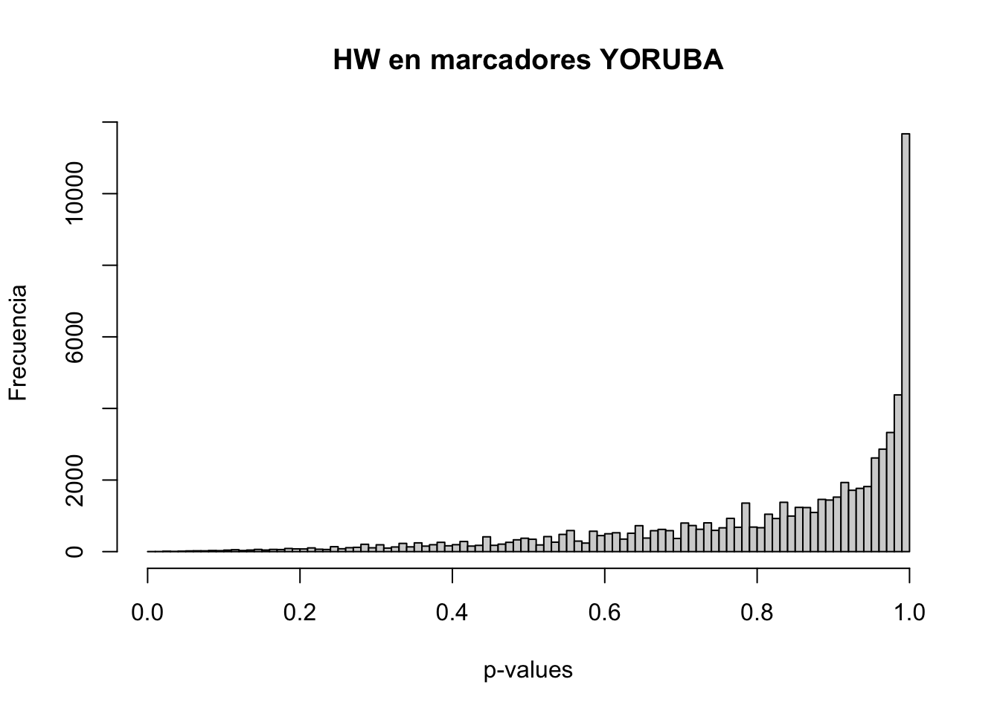
sum(HWmarcadores.Yoruba<1e-2,na.rm=TRUE)/length(HWmarcadores.Yoruba)## [1] 2.746498e-05pval.bonferroni.Yoruba<-p.adjust(HWmarcadores.Yoruba, method ="bonferroni")
sum(pval.bonferroni.Yoruba<1e-2,na.rm=TRUE)/length(pval.bonferroni.Yoruba)## [1] 0Claramente, el número de marcadores (y la proporción) que no se encuentran en equilibrio HW es muy reducido, por lo que podemos inferir que, en principio, en esta población se estarían cumpliendo los supuestos del mismo.
Ejercicio 1.1
Demostrar (a) que para un locus con dos alelos en una especie diploide en equilibrio Hardy-Weinberg, la diferencia de frecuencias alélicas es igual a la diferencia de frecuencia entre los homocigotos respectivos y (b) que esta diferencia es igual a \(2p -1\).
Solución Supongamos que llamamos \(p\) y \(q=1-p\) a las frecuencias de los dos alelos. Para la parte (a) debemos demostrar que su diferencia es igual a la diferencia entre los genotipos homocigotos, es decir, \(p-q=p^2-q^2\). Para ellos utilizaremos el hecho de que multiplicar por 1 ambos lados de la ecuación y el hecho de que \(p+q=1\). \[\begin{aligned} (p-q)=1*(p-q)=(p+q)(p-q)=p^2+pq-pq-q^2=p^2-q^2\end{aligned}\] En tanto, para la parte (b) utilizaremos que \(q=1-p\), por lo que \[\begin{aligned} p-q=p-(1-p)=p-1+p=2p-1\end{aligned}\]
1.6 Análisis de Componentes Principales
El análisis de tablas de datos como las que nos ocupan es un tema generalmente difícil dado el alto número de dimensiones del problema. Es decir, si para el mismo número total de celdas tuviésemos solamente dos columnas (es decir dos variables), se nos ocurre fácilmente que una forma de representar los datos es graficar una variable contra la otra. Sin embargo, cuando tenemos decenas, centenas o aún miles de variables como en nuestro caso, la representación gráfica de los datos es bastante más compleja. De hecho, está comprobado que la mayor parte de los humanos difícilmente consigue visualizar representaciones en más de 3 dimensiones. ¿Cómo hacemos entonces para explotar el poder de la visualización con datos multidimensionales?
Una forma interesante es la que entiende que los datos se pueden considerar como una nube de puntos en un espacio n-dimensional y que por lo tanto podemos re-ordenar los ejes coordinados de este espacio, de tal forma que el primer eje se corresponda con la dirección que captura mayor variación en los datos, el segundo eje, ortogonal al primero, en la dirección que coincida con la mayor variablidad restante, el tercero (ortogonal a los dos primeros) en la dirección que coincida con la mayor variabilidad restante y así sucesivamente. Basicamente, esta es la idea del ANÁLISIS de COMPONENTES PRINCIPALES (PCA).
Existen diferentes modos y herramientas para realizar una PCA en R, pero vamos a ver primero qsi podemos aplicar el método general. Para eso, primero debemos solucionar el problema de los datos faltantes (genotipos sin determinar), ya que la PCA no trabaja usualmente con datos faltantes.
1.6.1 PCA sin NA y con reducido número de marcadores
Una primera aproximación consiste en eliminar aquellas filas o columnas que contengan datos faltantes, siempre que esto no reduzca en forma significativa el conjuntos de los datos. Veamos que ocurre en nuestro caso, es decir, analicemos si tenemos muchos datos faltantes y sobre todo, cómo se distribuyen.
naSNPS<-apply(ngenot,1,function(x) sum(is.na(x)))
nageno<-apply(ngenot,2,function(x) sum(is.na(x)))
sort(naSNPS,decreasing=TRUE)[1:10]## rs11810467 rs1450952 rs11634779 rs10467005 rs17148511 rs2801943 rs2303324
## 54 52 52 51 46 41 39
## rs2267670 rs2073725 rs7772351
## 39 38 37sort(nageno,decreasing=TRUE)[1:10]## 1877_NA18520 1069_PT-912H 1082_PT-91CS 1140_PT-GLG1 1139_PT-GLFL 1429_NA17967
## 3739 3096 2977 2970 2956 2697
## 1062_PT-8ZVZ 1220_NA12843 1888_NA19248 1422_NA18146
## 2610 2524 2503 2388hist(naSNPS,50)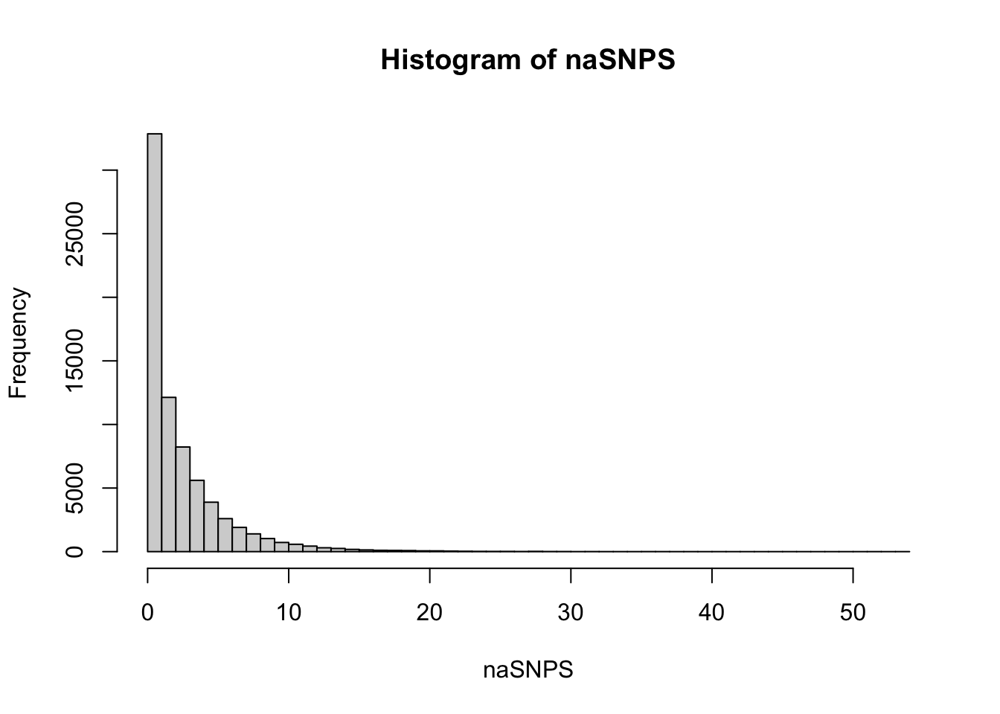
hist(nageno,100)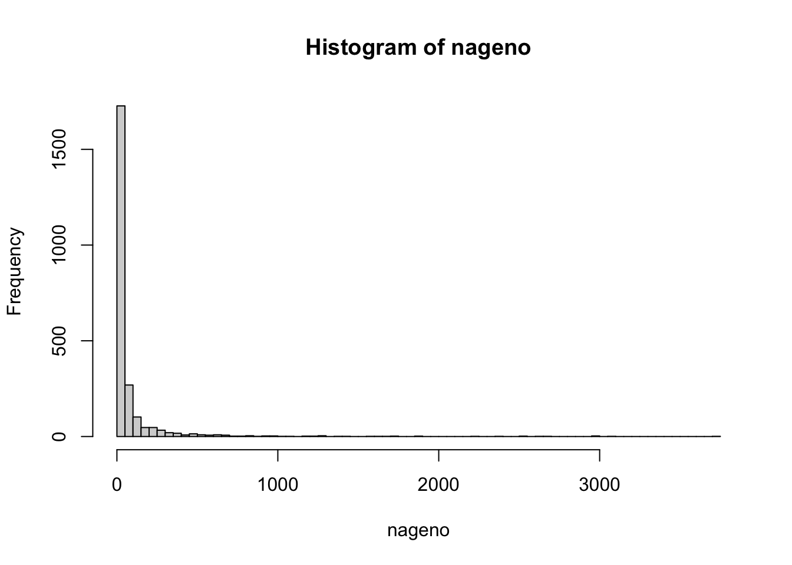
Es decir, tenemos algunos individuos con muchos datos faltantes (más de 2000) y tenemos varios marcadores que no tiene datos para muchos individuos. Una alternativa es ver la posibilidad de eliminar todos aquellos marcadores que tienen algún datos faltante (al menos uno). Veamos cuántos marcadores pasarían este flitro:
sum(naSNPS==0)## [1] 16133Si bien es una reducción sustantiva, 16133 marcadores no son tan pocos y vale la pena tener una idea primaria de que ocurre si hacemos una PCA sobre este juego inicial de marcadores. Si bien no es la forma “correcta” de escalar los datos, en esta primera aproximación vamos a explorar que ocurre con la PCA cuando la hacemos en “correlación” (ver el parámetro cor=TRUE en la función), es decir, cuando escalamos las columnas de tal forma que todas tengan la misma variación.
ngenot.sinna<-ngenot[which(naSNPS==0),]
mipca<-princomp(ngenot.sinna[sample(1:(dim(ngenot.sinna)[1]),3000),],cor=TRUE)
plot(mipca)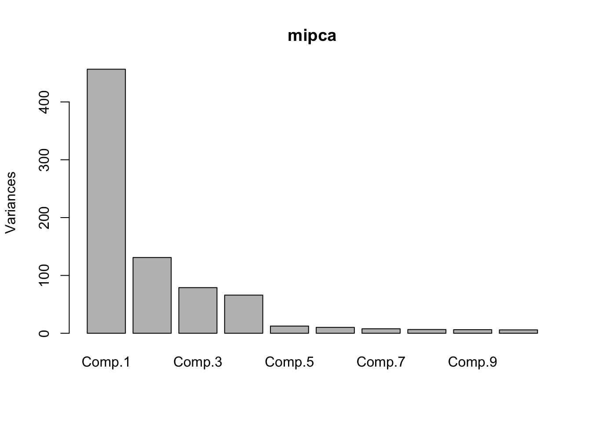
biplot(mipca,cex=0.3)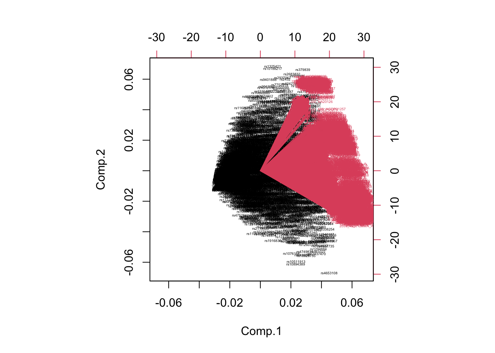
Si analizamos el primer gráfico, el de barras, vemos que hay 4 componentes de importancia, es decir que habría 4 dimensiones de los datos con información relvante, mientras que el resto sería variación relativamente “residual” (de menor orden, que no aporta demasiado a la interpretación del fenómeno global). Por otra parte, el segundo gráfico intenta representar en la misma visualización los marcadores y los individuos, lo que dado el importante número de ambos resulta en un gráfico imposible de interpretar. Si bien es posible ajustar los parámetros para mejorar sustancialmente la visualización, veremos más adelante que algunos paquetes resuleven este problema de manera muy satisfactoria y mayormente sin nuestra intervención.
Finalmente, para saber si los marcadores que elegimos (aquellos sin datos faltantes) son una muestra representativa y sin sesgo del conjunto de todos los marcadores, al menos respecto al cromosoma de origen, podemos ver que ocurre en los dos conjuntos de datos y ver si la diferencia es significativa.
(tsna<-cbind("todos"=table(snps[,"CHROM"]),"sin.na"=table(snps[which(naSNPS==0),"CHROM"])))## todos sin.na
## 1 5793 1451
## 10 3964 976
## 11 3649 697
## 12 3531 730
## 13 2745 592
## 14 2477 434
## 15 2281 545
## 16 2183 560
## 17 1968 450
## 18 2205 539
## 19 1212 219
## 2 6066 1356
## 20 1977 508
## 21 1093 238
## 22 1075 209
## 3 5108 1127
## 4 4288 997
## 5 4610 1125
## 6 5005 975
## 7 4052 919
## 8 4043 980
## 9 3495 506apply(tsna,2,sum)## todos sin.na
## 72820 16133chisq.test(tsna)##
## Pearson's Chi-squared test
##
## data: tsna
## X-squared = 211.13, df = 21, p-value < 2.2e-16Claramente, el valor del test de \(\chi^2\) es altamente significativo, lo que significa que ambos juegos de marcadores difieren en la proporción que representa a cada cromosoma.
t(t(tsna)/apply(tsna,2,sum))## todos sin.na
## 1 0.07955232 0.08993987
## 10 0.05443559 0.06049712
## 11 0.05010986 0.04320337
## 12 0.04848943 0.04524887
## 13 0.03769569 0.03669497
## 14 0.03401538 0.02690138
## 15 0.03132381 0.03378169
## 16 0.02997803 0.03471146
## 17 0.02702554 0.02789314
## 18 0.03028014 0.03340978
## 19 0.01664378 0.01357466
## 2 0.08330129 0.08405132
## 20 0.02714913 0.03148825
## 21 0.01500961 0.01475237
## 22 0.01476243 0.01295481
## 3 0.07014556 0.06985682
## 4 0.05888492 0.06179880
## 5 0.06330678 0.06973285
## 6 0.06873112 0.06043513
## 7 0.05564405 0.05696399
## 8 0.05552046 0.06074506
## 9 0.04799506 0.031364281.7 Paquetes específicos para genética de poblaciones (adegenet y hierfstat)
Hasta acá hemos trabajado esencialmente con los distintos componentes básicos de información que existen en un archivo VCF en forma separada. El motivo de esto fue el de explorar y entender dichos componentes a cabalidad, así como entender que nosotros podemos especificar fácilmente las operaciones sobre los datos que sean de nuestro interés. Sin embargo, existen diferentes paquetes en R que nos permiten trabajar con datos de genética de poblaciones. Uno de estos paquetes es adegenet. Si no lo tienes instalado, es fácil hacerlo con install.packages(“adegenet”, dep=TRUE). Lo primero que vamos a hacer entonces es crear un objeto de la clase “genind”, una clase central para este paquete y de la que podremos utilizar diversas funciones directamente. Es importante notar que la función df2genind(), encargada de crear el objeto de clase “genind” a partir de la tabla de genotipos (y de otra información, por ejemplo la tabla de poblaciones), utiliza el formato del tipo “0/0”, “0/1”, “1/1” de nuestros datos, por lo que si queremos trabajar con los datos que están en la tabla del IGSR debemos subsetear ahora la tabla de genotipos en dicho formato.
# install.packages("adegenet", dep=TRUE)
library("adegenet")## Loading required package: ade4##
## /// adegenet 2.1.10 is loaded ////////////
##
## > overview: '?adegenet'
## > tutorials/doc/questions: 'adegenetWeb()'
## > bug reports/feature requests: adegenetIssues()genot.estan<-genot[,muestras.que.estan]
colnames(genot.estan)<-nombresengenot[which(nombresengenot%in%ta$Sample.name)]
genpop<-df2genind(t(genot.estan[sample(1:dim(genot)[1],3000),]),sep="/",pop=tb$Population.name)
class(genpop)## [1] "genind"
## attr(,"package")
## [1] "adegenet"Para ver los distintos “slots” que tenemos en este objeto, podemos hacer simplemente:
# los slots que existen en este objeto
names(genpop)## [1] "tab" "loc.fac" "loc.n.all" "all.names" "ploidy" "type"
## [7] "other" "call" "pop" "strata" "hierarchy"Una forma sencilla que ya probamos para extraer información de los “slots” es acceder a ellos directamente a través del operador “arroba”, pero mejor aún, existen funciones específicas (más seguras) para acceder a los correspondientes “slots”:
# un trozo de la tabla de genotipos
genpop@tab[1:10,1:10]## rs2899887.0 rs2899887.1 rs958877.0 rs958877.1 rs6455553.1 rs6455553.0
## HGDP00479 2 0 2 0 2 0
## HGDP00985 2 0 2 0 0 2
## HGDP01094 2 0 2 0 1 1
## HGDP00982 2 0 2 0 1 1
## HGDP00911 2 0 2 0 2 0
## HGDP01202 2 0 2 0 2 0
## HGDP00461 2 0 2 0 2 0
## HGDP00986 2 0 2 0 2 0
## HGDP00449 2 0 2 0 2 0
## HGDP00912 2 0 2 0 2 0
## rs12931133.0 rs12931133.1 rs2041794.0 rs2041794.1
## HGDP00479 2 0 1 1
## HGDP00985 2 0 2 0
## HGDP01094 2 0 2 0
## HGDP00982 2 0 0 2
## HGDP00911 2 0 1 1
## HGDP01202 2 0 1 1
## HGDP00461 2 0 2 0
## HGDP00986 2 0 1 1
## HGDP00449 2 0 1 1
## HGDP00912 2 0 2 0# Mejor aún, podemos extraerlo con una función específica
tab(genpop)[1:10,1:10]## rs2899887.0 rs2899887.1 rs958877.0 rs958877.1 rs6455553.1 rs6455553.0
## HGDP00479 2 0 2 0 2 0
## HGDP00985 2 0 2 0 0 2
## HGDP01094 2 0 2 0 1 1
## HGDP00982 2 0 2 0 1 1
## HGDP00911 2 0 2 0 2 0
## HGDP01202 2 0 2 0 2 0
## HGDP00461 2 0 2 0 2 0
## HGDP00986 2 0 2 0 2 0
## HGDP00449 2 0 2 0 2 0
## HGDP00912 2 0 2 0 2 0
## rs12931133.0 rs12931133.1 rs2041794.0 rs2041794.1
## HGDP00479 2 0 1 1
## HGDP00985 2 0 2 0
## HGDP01094 2 0 2 0
## HGDP00982 2 0 0 2
## HGDP00911 2 0 1 1
## HGDP01202 2 0 1 1
## HGDP00461 2 0 2 0
## HGDP00986 2 0 1 1
## HGDP00449 2 0 1 1
## HGDP00912 2 0 2 0Como mencionamos más arriba, es importante notar que la transformación de nuestros datos que estaban en formato “0/0”, “0/1”, “1/1” se pasaron al formato numérico que usamos antes. La conversión fue automática y como también dijimos previamente, esto permite trabajar cómodamente con funciones matemáticas en lugar de con funciones sobre texto.
La función pop() extrae las poblaciones a las que corresponden las muestras de este objeto. Con este dato, por ejemplo, podemos graficar el tamaño de muestra para las distintas poblaciones haciendo:
barplot(table(pop(genpop)), col=funky(17), las=3,xlab="", ylab="Tamaño de muestra",cex.names=0.5)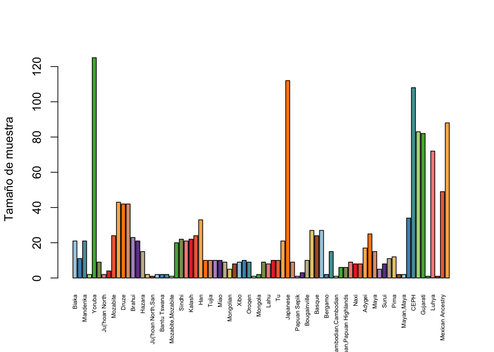
Un paso importante es resumir la información existente en nuestra muestra, cosa que podemos hacer usando la función summary() y ya de paso verificar la proporción de datos (genotipos) faltantes:
temp <- summary(genpop)
names(temp)## [1] "n" "n.by.pop" "loc.n.all" "pop.n.all" "NA.perc" "Hobs"
## [7] "Hexp"# PORCENTAJE DE DATOS FALTANTES
temp$NA.perc## [1] 0.09409177# VERIFICACIÓN
sum(is.na(genpop@tab))/(dim(genpop@tab)[1]*dim(genpop@tab)[2])## [1] 0.0009409177Por otra parte, a partir de este resumen también podemos estudiar el comportamiento de la heterocigosidad observada respecto a la esperada para todos los marcadores, buscando aquellos marcadores que más se apartan de lo esperado.
plot(temp$Hexp, temp$Hobs, pch=20, cex=0.75, xlim=c(0,.55), ylim=c(0,.55),xlab="Hexp",ylab="Hobs")
abline(0,1,lty=2,col="red")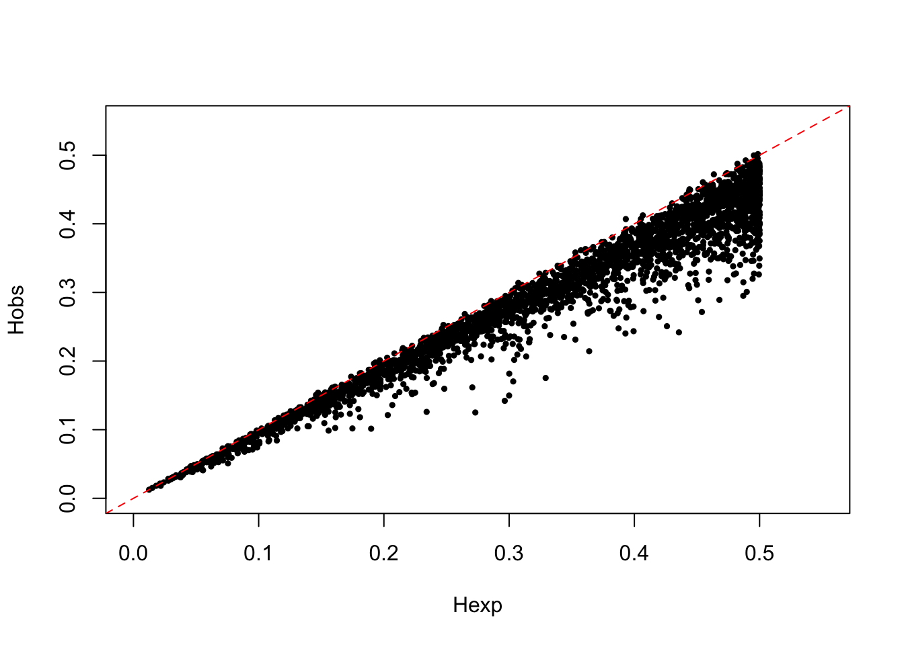
¿Cómo es el comportamiento de la heterocigosidad observada respecto a la esperada? ¿Es en general mayor la observada o la esperada? ¿A qué se puede deber esto?
1.8 El Coeficiente de endocría y estadísticos F (introducción teórica)
Como ya vimos previamente, las poblaciones de muchas especies se encuentran estructuradas en sub-poblaciones, cada una de ellas con su propia dinámica evolutiva. Por ejemplo, dentro de una región tenemos diferentes cuencas, que a su vez tienen diversos afluentes, que cada una de ellos posee una conexión con diferentes espejos de agua. Eso nos permite identificar, en forma arbitraria al principio, diferentes niveles dentro de una jerarquía: cuencas, dentro de ellas afluentes y dentro de los mismos los espejos de agua. La estructura puede ser también mucho más sencilla, con un par de niveles, por ejemplo poblaciones aisladas (por una barrera física, por ejemplo) dentro de un conjunto regional de las mismas (ensemble). En este sentido, en lo que nos atañe en este momento, la estructura reproductiva de cada población del ensemble puede seguir sus propios patrones, lo que se reflejará también en la relación entre frecuencias alélicas y genotípicas de cada una de ellas. Como vimos antes, el apartamiento del apareamiento al azar se refleja usualmente en una carencia de heterocigotos respecto a lo esperado para el equilibrio de Hardy-Weinberg. Es más, definimos un índice de fijación \(F\) como la probabilidad de encontrar en un locus dos alelos idénticos por ascendencia y vimos que la pérdida de heterocigotos era igual a \(2pqF\). Sin embargo, al tener distintas poblaciones (y por lo tanto niveles, por ejemplo individuos, poblaciones, ensemble) necesitamos de alguna forma entender a qué nivel se producen los apartamientos respecto al equilibrio Hardy-Weinberg. Para esto definiremos una serie de estadísticos, primero para representar la heterocigosidad observada y esperada a distintos niveles y luego unos estadísticos de fijación análogos a nuestro \(F\).
En la figura 1.2 se observa una representación de una estructura poblacional, de una especie diploide, donde diferentes poblaciones (enmarcadas por recuadros verdes) poseen una diferente proporción de alelos de dos colores, rojo y azul, así como distintas proporciones de los 3 genotipos. Todas estas poblaciones se encuentran agregadas en un gran ensemble, encuadrado en azul.
Figura 1.2: Estructuración de una gran población (marco en azul) como un ensemble de poblaciones (marcos en verde) y las distribución de la heterocigosidad observada y esperada a los distintos niveles de agregación, así como los correspondientes estadísticos.
Claramente, dentro de cada población es posible contar la proporción de individuos heterocigotas (si estos fuesen distinguibles por su fenotipo, o si lo podemos hacer a nivel molecular) y por lo tanto, si tenemos \(n\) poblaciones, para cada una de ellas obtendremos un estimador \(\hat{H}_i\). Decimos que obtenemos un estimador, y por eso lo señalamos con el “gorro” (\(\hat{}\)) porque normalmente solo tenemos una muestra de individuos de cada población. Una manera sencilla de resumir la información respecto a la proporción de heterocigotas de cada una de ellas será la media de la heterocigosidad, es decir
\[\begin{equation} H_I=\frac{1}{n}\sum_{i=1}^n\hat{H}_i \tag{1.2} \end{equation}\]
Se trata, en este caso de una forma de resumir la información sobre la heterocigosidad observada, producto de los \(F\) a nivel individual y por eso el subíndice \(I\). Para cuantificar la reducción respecto a lo esperado con dicha estructura, en primer lugar debemos calcular una medida resumen de lo esperado en cada población si las mismas se aparearan (a la interna) al azar. Otra vez, una medida sencilla lo constituye la media de lo esperado en cada una. Por lo tanto,
\[\begin{equation} H_S=\frac{1}{n}\sum_{i=1}^n2p_iq_i \tag{1.3} \end{equation}\]
ya que en cada una de las \(n\) poblaciones las frecuencias alélicas pueden ser diferentes y por eso el \(p_i\) y \(q_i=1-p_i\). En este punto solo nos queda definir un nivel de heterocigosidad. Si ponemos todos los individuos juntos, sin importar de que población vengan, entonces la heterocigosidad esperada global es igual a
\[\begin{equation} H_T=2\bar{p}\bar{q} \tag{1.4} \end{equation}\]
Con todos estos estimadores de heterocigosidad en mano estamos ahora en condiciones de entender la estructura de la pérdida de heterocigosisidad, es decir, a qué nivel y cuánto se da la pérdida. El primer nivel, dentro de la estructura representada en la figura 1.2 es el que corresponde a la pérdida entre lo esperado y lo observado dentro de las poblaciones. Como nuestras medidas de heterocigosis esperada y observada son \(H_S\) y \(H_I\) respectivamente, la diferencia entre ellos, estandarizada por la esperada será nuestro índice de fijación a nivel intra población, es decir
\[\begin{equation} F_{IS}=\frac{H_S-{H}_I}{H_S} \tag{1.5} \end{equation}\]
En este caso, las letras que aparecen en el súbíndice representan lo individual o intra-población (\(I\)) versus lo esperado para la población (\(S\) de sub-población). Más aún, \(F_{IS}\) es exactamente igual al \(F\) definido previamente, en la medida de que la media represente adecuadamente lo que ocurre dentro de cada población.
En nuestra estructura, el siguiente nivel sería comparar lo esperado en la población total con lo esperado si se cumpliese el equilibrio de Hardy-Weinberg en cada una de las poblaciones. Una nota importante es que aún cumpliéndose el equilibrio de Hardy-Weinberg en cada población no necesariamente se cumple cuando consideramos a todos los individuos en conjunto. Un ejemplo claro de esto podemos verlo en la figura 1.3. Dos poblaciones de ovejas en lados opuestos de un río han fijado diferentes alelos para el color: a la izquierda blanco, a la derecha verde. Dentro de cada población las ovejas se aparean libremente, por lo que podemos esperar el equilibrio Hardy-Weinberg. El río es una barrera infranqueable para las ovejas, por lo que no hay migración entre ambas poblaciones. Si, mientras recorremos el río en bote, capturamos a las ovejas que pastan en la ribera (el mismo número en una ribera que en la otra), les extraemos una muestra y luego secuenciamos el locus “del color” (en principio no existe dicha cosa, la herencia del color en mamíferos es extremadamente compleja) vamos a llegar a unos números que nos llamarán la atención. Mientras que las frecuencias del alelo blanco y del verde son iguales, es decir \(p=q\), por lo que esperamos \(2pq=2 \frac{1}{2}\frac{1}{2}=\frac{1}{2}\) heterocigotos. Sin embargo, en nuestra muestra no hay ningún individuo heterocigoto ya que las ovejas son de dos poblaciones en las que se ha fijado el alelo para el color, por lo que al considerar todo el ensemble (a través de una muestra de ambas poblaciones) nos encontramos con un déficit enorme de heterocigotos. La razón es obvia: se trata de una forma de estructura de apareamiento no-completamente-al-azar (ya que los individuos solo se pueden aparear con los de su población) y por lo tanto existirá una carencia de heterocigotos, como ya vimos en la sección [Generalización de Hardy-Weinberg para apareamientos no-aleatorios]. Más allá de ser obvia la razón, lo veremos en más detalle en la seccción referida al [El efecto Wahlund].
![Reducción en el número de heterocigotos a causa de la estructuración en poblaciones disjuntas. Las ovejas a ambos lados del río, una barrera infranqueable para las mismas, han fijado alelos diferentes para el color de la lana. Si muestreamos las ovejas que aparecen en la ribera, aproximadamente igual número a ambos lados, obtendremos una frecuencia intermedia para los alelos blanco y verde, por lo que esperamos cerca del \(50\%\) de heterocigotos (\(2pq=2 \frac{1}{2}\frac{1}{2}=\frac{1}{2}\)), pero en realidad no hay ningún individuo heterocigoto ya que los alelos están fijados en las dos poblaciones (diseño de las ovejas de http://cliparts.co/clipart/2377087 Fuente: Cliparts.co).](figuras/separadas.png)
Figura 1.3: Reducción en el número de heterocigotos a causa de la estructuración en poblaciones disjuntas. Las ovejas a ambos lados del río, una barrera infranqueable para las mismas, han fijado alelos diferentes para el color de la lana. Si muestreamos las ovejas que aparecen en la ribera, aproximadamente igual número a ambos lados, obtendremos una frecuencia intermedia para los alelos blanco y verde, por lo que esperamos cerca del \(50\%\) de heterocigotos (\(2pq=2 \frac{1}{2}\frac{1}{2}=\frac{1}{2}\)), pero en realidad no hay ningún individuo heterocigoto ya que los alelos están fijados en las dos poblaciones (diseño de las ovejas de http://cliparts.co/clipart/2377087 Fuente: Cliparts.co).
Como hicimos para \(F_{IS}\), para definir el índice de fijación de las (sub) poblaciones respecto al total vamos a hacer la resta de la heterocigosidad total esperada respecto a la esperada para las poblaciones y estandarizamos diviendo entre la heterocigosidad total esperada. Esta, no es ni más ni menos que \(2\bar{p}\bar{q}\), con \(\bar{p}\) y \(\bar{q}=1-\bar{p}\) las frecuencias en toda el ensemble en su conjunto. Es decir, el índice de fijación de las subpoblaciones respecto al total será
\[\begin{equation} F_{ST}=\frac{H_T-H_S}{H_T} \tag{1.6} \end{equation}\]
Finalmente, con la misma lógica podemos definir el índice de fijación entre lo que ocurre dentro de las poblaciones y el total como
\[\begin{equation} F_{IT}=\frac{H_T-H_I}{H_T} \tag{1.7} \end{equation}\]
Todos estos índices deben ser entendidos en conjunto. De hecho, Wright planteó la relación entre ellos (S. Wright (1943); WRIGHT (1951)) como:
\[\begin{equation} F_{ST} = \frac{(F_{IT}-F_{IS})}{(1-F_{IS})} \tag{1.8} \end{equation}\]
Es posible llegar a otra forma de la relación entre los índices, también muy informativa. Operando con la ecuación (1.9), tenemos que
\[\begin{equation} (1-F_{IS})F_{ST}=F_{IT}-F_{IS} \therefore \\ F_{IT}=F_{ST}+F_{IS}-F_{ST}F_{IS} \tag{1.9} \end{equation}\]
Multiplicando por \(-1\) y sumando \(1\) a ambos lados, tenemos
\[\begin{equation} -F_{IT}=-F_{ST}-F_{IS}+F_{ST}F_{IS} F_{ST}+F_{IS} \Leftrightarrow \\ 1-F_{IT}=1-F_{ST}-F_{IS}+F_{ST}F_{IS} F_{ST}+F_{IS} \tag{1.10} \end{equation}\]
Pero \((1-F_{ST})(1-F_{IS})=1-F_{ST}-F_{IS}+F_{ST}F_{IS} F_{ST}+F_{IS}\), por lo que poniendo todo junto, la ecuación (1.10) se transforma en
\[\begin{equation} (1-F_{IT})=(1-F_{ST})(1-F_{IS}) \tag{1.11} \end{equation}\]
Por lo que vimos, \(F_{ST}\) representa la diferenciación genética a causa de la estructuración en poblaciones independientes. En general no resulta trivial interpretar su valor sin el apoyo de más evidencia proveniente de otras fuentes, pero como forma de orientación, Hartl and Clark (2007) proponen una serie de guías prácticas dadas por Sewall Wright (1978) que pueden ayudar a entender la situación. Estas son:
Valores de \(0 \leqslant F_{ST} < 0,05\) indicarían POCA diferenciación genética
Valores de \(0,05 \leqslant F_{ST} < 0,15\) indicarían diferenciación genética MODERADA
Valores de \(0,15 \leqslant F_{ST} < 0,25\) indicarían GRAN diferenciación genética
Valores de \(F_{ST} \geqslant 0,25\) indicarían MUY GRANDE diferenciación genética
Sin embargo, como también mencionan Hartl and Clark (2007), el mismo Sewall Wright (1978) advierte que aún valores de \(F_{ST}\) menores a \(0,05\) podrían estar indicando una diferenciación genética significativa, por lo que la interpretación de estos valores no es inmediata
Los estadísticos \(F\) son muy usados para comprender la diversidad genética aún entre especies cercanas. Así, por ejemplo, Loáisiga et al. (2012) en un estudio sobre la diversidad del teosinte, una planta que junto con el maíz (Zea mays) forman el género Zea, comparan seis especies diferentes muy relacionadas entre sí en diferentes regiones de Centroamérica. Como los híbridos F1 de teosinte x maíz son fértiles, estas especies representan un reservorio importante de material genético para mantener la diversidad del maíz o aún para introducir variantes de genes importantes para la producción (resistencia a patógenos, tolerancia a metales pesados, etc.). Para estudiar la diversidad estos autores utilizan un juego de 21 microsatélites (SSR) en 120 individuos, detectando un total de 109 alelos diferentes. A partir del análisis de las frecuencias de los alelos y de los genotipos, calculan para el conjunto de las especies un \(F_{IS}=0,0815\), mientras que el \(F_{ST}=0,2017\). Con estos datos resulta claro que el apartamiento de Hardy-Weinberg dentro de las poblaciones es relativamente pequeño, mientras que la mayor parte de la diferenciación aparece entre especies (el equivalente a las poblaciones en nuestros razonamientos previos). De esta forma, el estudio sugiere que es fundamental la conservación de las diferentes especies ya que es donde reside la mayor parte de la diversidad.
Ejemplo 1.1
Consideremos un ensemble de poblaciones constituido por las 3 poblaciones que aparecen en la figura 1.2. Veamos si existe deficiencia de heterocigotos a algún nivel que nos permita sospechar apareamientos no-aleatorios dentro de las mismas o alguna estructuración geográfica.
| Parámetro | Población 1 | Población 2 | Población 3 | Media |
|---|---|---|---|---|
| \({fr(rojo)}\) | \(p_1=\frac{13}{24}=0,542\) | \(p_2=\frac{12}{24}=0,500\) | \(p_3=\frac{7}{24}=0,292\) | \(\bar{p}=\frac{32}{72}=0,444\) |
| \(\hat{H}\) | \(H_1=\frac{5}{12}=0,417\) | \(H_2=\frac{2}{12}=0,167\) | \(H_3=\frac{1}{12}=0,083\) | \(\frac{8}{36}=0,222\) |
| \(2p_iq_i\) | \(2\frac{13}{24}\frac{11}{24}=0,497\) | \(2\frac{12}{24}\frac{12}{24}=0,500\) | \(2\frac{7}{24}\frac{17}{24}=0,413\) | \(0,470\) |
Primero vamos a calcular todos los índices de heterocigosidad. La heterocigosidad observada está dada por la ecuación (1.2), es decir (con \(n=3\))
\[\begin{equation} H_I=\frac{1}{n}\sum_{i=1}^n\hat{H}_i=0,222 \end{equation}\]
que es el valor en la última columna del cuadro anterior, en la fila correspondiente a la heterocigosidad observada. Si en cada población los apareamientos fuesen al azar esperaríamos en cada una de ellas una proporción de heterocigotos igual a \(2p_iq_i\), que es la que figura en la tercera línea del cuadro anterior y por lo tanto, la heterocigosidad media esperada, de acuerdo a la ecuación (1.3), es
\[\begin{equation} H_S=\frac{1}{n}\sum_{i=1}^n2p_iq_i=0,470 \end{equation}\]
Finalmente, la heterocigosidad total esperada, de acuerdo a la ecuación (1.4), es
\[\begin{equation} H_T=2\bar{p}\bar{q}=2\bar{p}(1-\bar{p})=2 \times 0,444 \times (1-0,444)=0,494 \end{equation}\]
A partir de estos datos podemos calcular ahora los índices de fijación correspondientes. El primero, el que hace a la estructura interna de las poblaciones está dado por la ecuación (1.5) y es por lo tanto
\[\begin{equation} F_{IS}=\frac{H_S-{H}_I}{H_S}=\frac{0,470-0,222}{0,470}=0,528 \end{equation}\]
Basados en este número, podemos decir que se trata de un valor realmente alto y que por lo tanto dentro de las poblaciones (o alguna de ellas) el apareamiento se aparta claramente de lo esperable para las condiciones de panmixia.
Veamos que ocurre al segundo nivel, es decir el índice de fijación de las poblaciones respecto al total de los individuos, que podemos calcular a partir de la ecuación (1.6)
\[\begin{equation} F_{ST}=\frac{H_T-H_S}{H_T}=\frac{0,494-0,470}{0,494}=0,0486 \end{equation}\]
En este caso, el índice de fijación es bastante menor. De acuerdo a las guías prácticas dadas por Sewall Wright (1978), se trata de un valor (apenas) menor a \(0,05\) y por lo tanto indicativo de poca diferenciación genética entre poblaciones.
El índice de fijación entre el nivel más y menos inclusivo está dado por la ecuación (1.7), es decir
\[\begin{equation} F_{IT}=\frac{H_T-H_I}{H_T}=\frac{0,494-0,222}{0,494}=0,551 \end{equation}\]
Para verificación, usando la ecuación (1.11), tenemos que
\[\begin{equation} (1-F_{IT})=(1-F_{ST})(1-F_{IS})=(1-0,0486)(1-0,528)=0,449 \Leftrightarrow F_{IT}=1-0,449=0,551 \end{equation}\]
que es igual al valor que obtuvimos directamente. En nuestro caso, entonces, se trata de un ensemble de poblaciones donde la mayor parte del deficit de heterocigotos que hemos encontrado se debe un apareamiento no-aleatorio dentro de las poblaciones que lo constituyen y en mucho menor medida debido a la diferenciación genética entre poblaciones.
Una manera alternativa de pensar en \(F_{ST}\) es en términos de partición de la varianza en frecuencias de los alelos. En particular, si pensamos que cada población en un conjunto grande de poblaciones formando el ensemble tiene sus propias frecuencias \(p_i\) y \(q_i\), la varianza en las frecuencia de \(p\), \(\sigma^2_{\bf{p}}\), estará dada por
\[\begin{equation} \sigma^2_{\bf{p}}=\frac{1}{n}\sum_{i=1}^n(p_i-\bar{p})^2 \tag{1.12} \end{equation}\]
Lo mismo para \(q\), cuya varianza será igual a la de \(p\) y por lo tanto la varianza en frecuencias igual a \(\sigma^2_{\bf{p}}\). Para comparar esta varianza con la del nivel más inclusivo la dividimos entre \(2\bar{p}\bar{q}=\bar{p}(1-\bar{p})\) y por lo tanto
\[\begin{equation} F_{ST}=\frac{2\sigma_{\bf{p}}^2}{2\bar{p}(1-\bar{p})}=\frac{\sigma_{\bf{p}}^2}{\bar{p}(1-\bar{p})} \tag{1.13} \end{equation}\]
Pese a su importancia, los estadísticos \(F\) han estado sujetos a diferentes interpretaciones, sumado a diferentes formas de calcularlos y a partir de fuentes de información diferente, lo que ha generado no poca confusión. Una revisión importante del tema, con un enfoque en lo que pueden aportar diferentes partes del genoma se encuentra en Holsinger and Weir (2009).
1.8.1 Estadísticos F (práctico)
Como discutimos previamente, nuestros individuos pertenecen a distintas poblaciones. Además de entender las relaciones entre ellas, usualmente es necesario cuantificar la diferenciación genética entre las mismas y existen diferentes estadísticos que representan esta estructuración en niveles. Algunos de estos son los estadísticos \(F\) de Wright, en particular el \(F_{ST}\). Estos se basan en la heterocigosidad observada y esperada a diferentes niveles jerárquicos de la estructura y utilizan como insumos (entre otros) la heterocigosidad observada (\(H_o\)), la (a veces) llamada heterocigosidad esperada o diversidad genética dentro de poblaciones (\(H_s\)) y la diversidad genética total (\(H_t\), a veces llamada heterocigosidad total). El paquete hierfstat posee diversas funciones para trabajar en genética de poblaciones, funciones que me permiten trabajar directamente sobre objetos de la clase “genind”. Por ejemplo, para calcular algunos de estos estadísticos podemos hacer:
# library(devtools)
# install_github("jgx65/hierfstat")
library("hierfstat")##
## Attaching package: 'hierfstat'## The following objects are masked from 'package:adegenet':
##
## Hs, read.fstatbs.gp<-basic.stats(genpop)
boxplot(bs.gp$perloc[,1:3],notch=TRUE,col=c("green","blue","red"))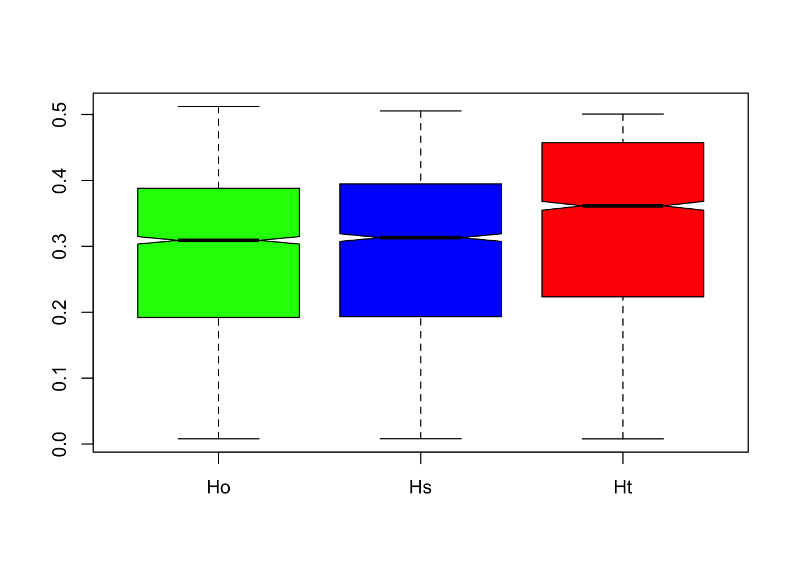
bs.gp$overall## Ho Hs Ht Dst Htp Dstp Fst Fstp Fis Dest
## 0.2881 0.2913 0.3328 0.0415 0.3334 0.0420 0.1246 0.1261 0.0112 0.0593Prueba a consulta la ayuda de la función basic.stats() para entender lso diversos estadísticos reportados. De acuerdo al estadístico \(F_{ST}\), ¿Existe diferenciación genética importante entre las distintas poblaciones que forman parte de nuestros datos?
Por ejemplo, si queremos sacar estadísticos \(F\) por poblaciones, podemos hacer:
micol<-as.factor(tb$Population.name)
levels(micol)<-colors()[sample(1:665,length(levels(micol)))]
betaiovl<-betas(genpop)$betaiovl
barplot(betaiovl,las=2,cex.names=0.5,col=as.character(levels(micol)),las=3)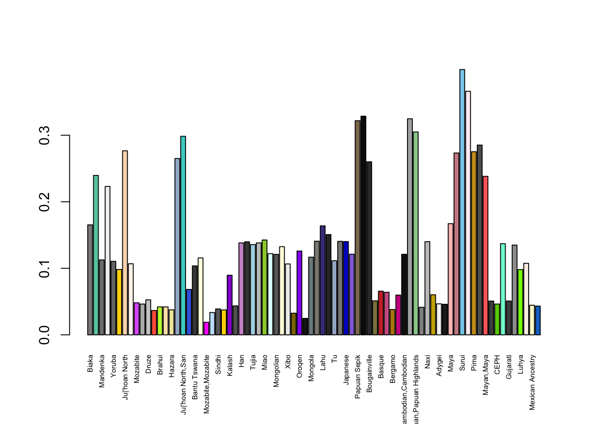
1.9 Anális de PCA usando paquetes de genética de poblaciones
Previamente intentamos identificar la estructura de nuestros datos haciendo un análisis de componentes principales. En ese caso, trabajamos con un paquete estándar y sin transformar los datos en forma adecuada. Obviamente, como era de esperar, no pudimos sacar demasiadas conclusiones de dicha aproximación. Veamos ahora qué ocurre si utilizamos algún paquete específico para realizar dicho análisis. Vamos a utilizar la función indpca() del paquete “hierfstat” y vamos en primer lugar a representar los datos utilizando la coloración de acuerdo a la población a la que pertenecen los individuos. El análisis puede llevar un rato, por lo que no hay que ponerse nervioso.
# COLOREADO POR POBLACIÓN
x<-indpca(genpop)
micol<-as.factor(tb$Population.name)
levels(micol)<-colors()[sample(1:665,length(levels(micol)))]
plot(x,col=as.character(micol),cex=0.5)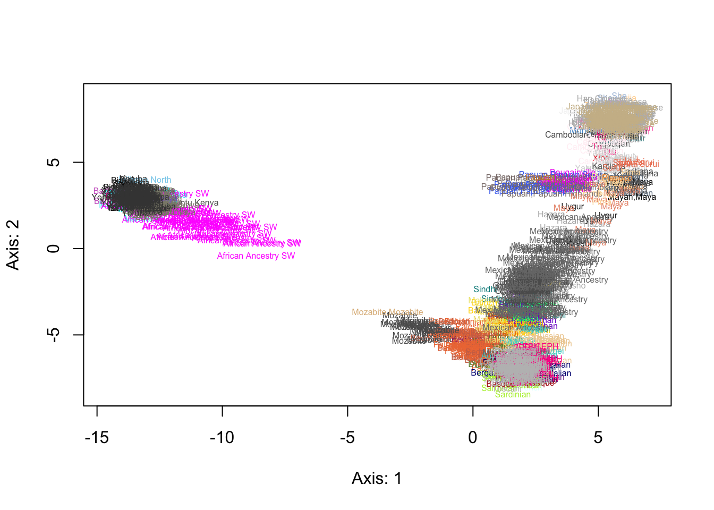
¿Cómo interpretamos el resultado de este análisis? Por un lado, podemos imaginarnos que los datos se encuentran distribuidos de forma tal que todos los individuos se encuentran dentro de un triángulo. ¿Qué representan los vértices de dicho triángulo? ¿Y las aristas?
En general, los dos primeros ejes de una PCA con poblaciones de todo el mundo tienden a tener esta forma, con los vértices representando poblaciones que divergieron hace muchísimo tiempo: la africana, la europea y la asiática. Más aún, si prestamos atención, el eje 1 de la PCA (que es el que corresponde a la mayor variabilidad) separa netamente a la población africana de las otras dos. La población africana es origen de las otras dos, las que mantuvieron un intercambio mucho más nutrido que con la población africana.
Por otra parte, claramente observamos individuos distribuidos en las aristas entre dos de las superpoblaciones de los vértices: en ese caso, se trata (generalmente) de mestizaje entre las mismas. Por ejemplo, los Mozabite que son poblaciones del norte de África aparecen en la arista que une africanos y europeos, lo que no es de extrañar dado el histórico intercambio genético entre dichos pueblos (europeos y africanos del norte). Por otro lado, en la arista que une europeos y asiáticos aparecen la mayor parte de los grupos nativos americanos. La razón más sencilla para esto es el profundo mestizaje ocurrido con los europeos (especialmente españoles y portugueses) luego de la conquista de nuestro continente por parte de los europeos.
La misma estructura de la PCA podemos observarla ahora considerando las superpoblaciones a las que pertenecen los individuos:
# COLOREADO POR SUPERPOBLACIÓN
micol2<-as.factor(tb$Superpopulation.name)
levels(micol2)<-colors()[sample(1:665,length(levels(micol2)))]
plot(x,col=as.character(micol2),cex=0.5)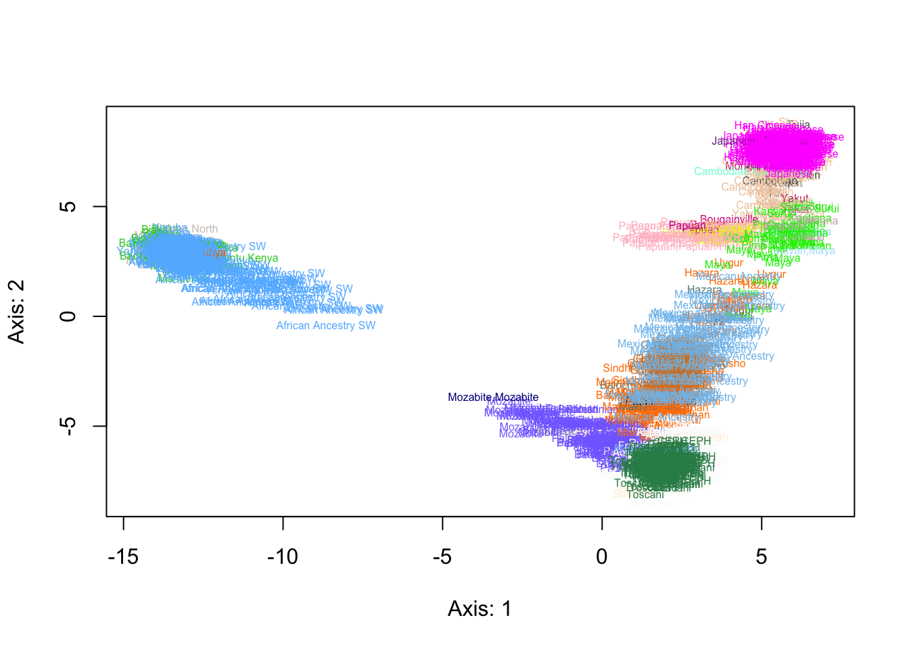
1.10 OTRA FORMA DE HACER PCA
Otra forma alternativa de realizar la PCA es usando directamente la función dudi.pca() (que utiliza el paquete “hierfstat”). Para esto debemos sacarnos de arriba antes el problema de los datos faltantes.
1.10.1 IMPUTACIÓN
Una alternativa mucho más eficiente que eliminar los datos es la de imputar los datos faltantes. Existen paquetes generales que me permiten hacer este tipo de operaciones y uno de ellos es Amelia. La idea de la imputación es que tanto la columna de interés como el resto de la columnas poseen información que me permiten hacer una “educated guess” del valor faltante. Una de las posibilidades más simple, aunque no la mejor, es sustituir los valores faltantes por la media de la columna. Sin embargo, esta opción ignora la información que pueden aportar las otras columnas. Por ejemplo, una alternativa es considerar que de alguna manera las otras columnas pueden predecir el valor de la columna de interés y por lo tanto, condicional a la información de las otras columnas, puedo obtener una predicción para mi dato faltante. Una de las posibilidades interesantes de la imputación con componente estocástico (es decir, con un componente aleatorio) es que puedo realizarla muchas veces y realizar tantos análisis como juegos de datos imputados, para ver la sensibilidad de mis conclusiones a los datos faltantes. En este caso, vamos a utilizar la forma más sencilla que es la imputación por la media, usando en este caso una función provista directamente en el método de acceso tab() que ya vimos antes.
x.sinna <- tab(genpop, freq=TRUE, NA.method="mean")
pca.x<-dudi.pca(df = x.sinna, center = TRUE, scale = FALSE, scannf = FALSE, nf = 2)
s.class(pca.x$li, fac=pop(genpop), col=funky(78),clabel=0.65)
add.scatter.eig(pca.x$eig[1:50],3,1,2, ratio=.3)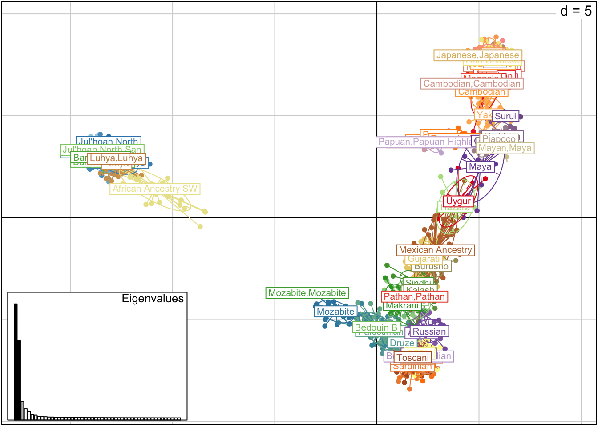
Como discutimos previamente, en la PCA existe un ordenamiento de los distintos ejes de acuerdo a la varianza explicada, cada uno explicando menos varianza que el previo. Por lo tanto, es importante poder entender qué número de ejes es necesario conservar para tener una representación adecuada de los datos. Una forma es la visualización en un gráfico de barras, lo que usualmente como “screeplot”. En el gráfico anterior, el inserto abajo a la izquierda representa un gráfico de este tipo. Claramente, los dos primeros ejes capturan una parte importante de la varianza. Veamos en números lo que eso representa:
# PORCENTAJE DE LA VARIANZA EN LOS PRIMEROS EJES
eig.perc <- 100*pca.x$eig/sum(pca.x$eig)
eig.perc[1:5]## [1] 8.0011120 5.4620389 1.2683616 0.7795280 0.5981882cumsum(eig.perc)[1:5]## [1] 8.001112 13.463151 14.731513 15.511041 16.109229plot(cumsum(eig.perc)[1:30],type="b",col="red",xlab="hasta el eje",ylab="varianza explicada acumulada",pch=21,bg="blue")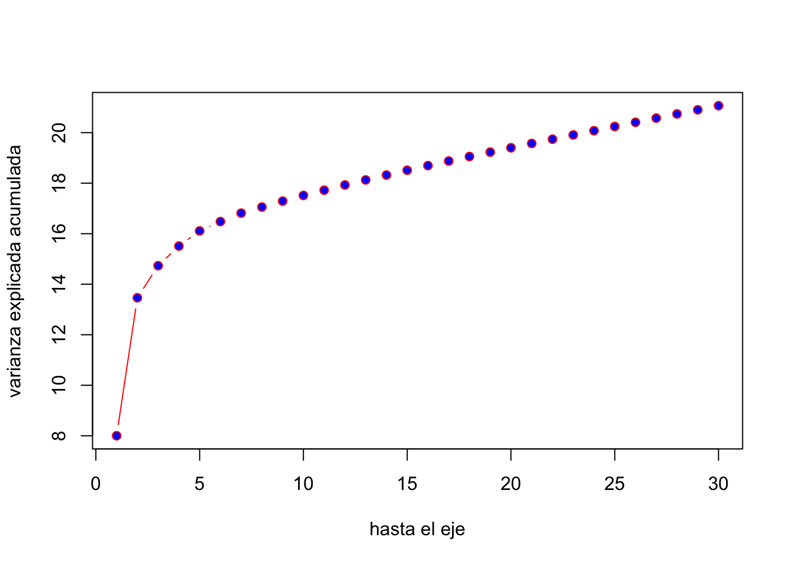
Observando estos números, así como el gráfico, se aprecia claramente que entre los dos primeros ejes explican un poco más de \(13.3\%\) de la varianza, lo que parece muy poco. Sin embargo, cuando consideramos que redujimos las complejidad de miles de columnas con información (marcadores/individuos) a una representación en dos dimensiones, en ese contexto se aprecia la importancia de este resultado.
Por otra parte, una forma de entender la importancia de los distintos marcadores en las dimensiones de la PCA, es decir en los nuevos ejes del sistema coordenado, podemos estudiar las cargas correspondientes. En nuestro caso, podemos llamar directamente a una función capaz de graficar esto o podemos hacer las cuentas sobre el objeto resultante de dudi.pca():
# LOADING PLOT
loadingplot(pca.x$c1^2,cex.lab=0.5)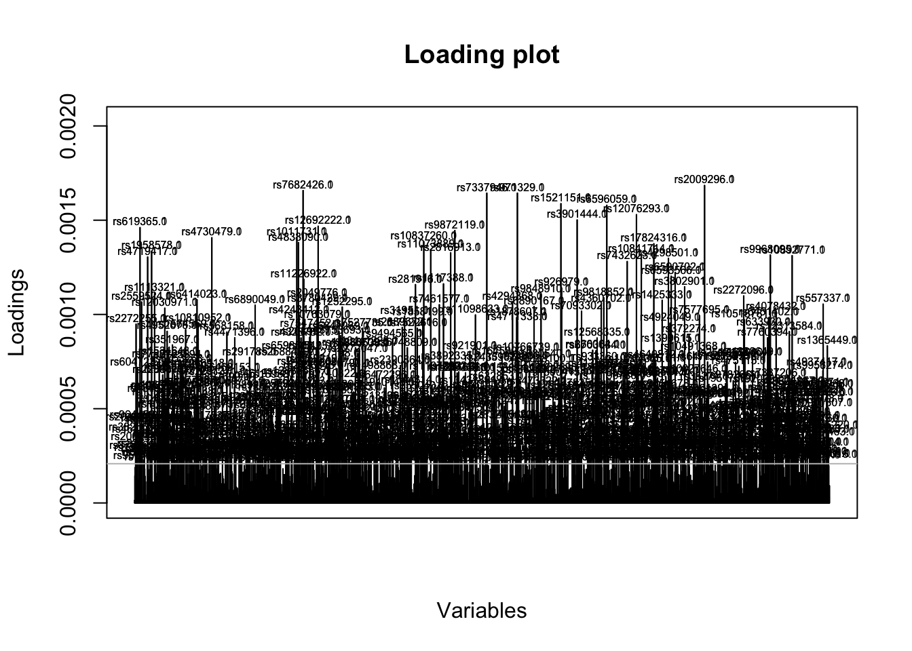
# SNPS más importantes en EJE1
head((pca.x$c1^2)[order(pca.x$c1[,1],decreasing=TRUE),])## CS1 CS2
## rs2009296.0 0.001684070 5.076293e-05
## rs7682426.0 0.001657271 1.998290e-06
## rs971329.0 0.001643506 2.796775e-04
## rs7337946.0 0.001643452 1.523123e-04
## rs1521151.0 0.001587603 4.781105e-05
## rs6596059.0 0.001579135 9.189075e-05¿Qué marcadores tienen mayor influencia en el eje 1?
1.11 ENSEMBL y biomaRt
Hasta ahora nos centramos en el análisis de nuestros datos, pero usualmente es necesario vincular esta información con la que existe en otras bases de datos. Una herramienta fundamental en este sentido es el paquete “biomaRt” de bioconductor (un proyecto paraguas para paquetes de R en el área de genómica y biología molecular). Vamos a experimentar brevemente con “biomaRt” y explorar algunas posibilidades sencillas, pero las capacidades del paquete son enormes. Lo primero con “biomaRt” es definir los datos con los que vamos a trabajar. Para ello es necesario definir la base de datos (Mart), así como el juego de datos de nuestro interés. Comencemos trabajando con la base de datos de SNPs (“ENSEMBL_MART_SNP”) y el juego de datos de humano (“hsapiens_snp”).
library("biomaRt")
ensembl <- useMart("ENSEMBL_MART_SNP", dataset = "hsapiens_snp")Luego de habernos conectado a la base de datos, podemos ver los filtros que podemos aplicar y los atributos de la base de datos. Los filtros serán nuestras herramientas para elegir que parte de los datos cumplen con nuestros criterios de busca, mientras que los atributos representan los campos de la base de datos queremos mostrar.
# Los primeros filtros
head(listFilters(ensembl))## name description
## 1 chr_name Chromosome/scaffold name
## 2 start Start
## 3 end End
## 4 band_start Band Start
## 5 band_end Band End
## 6 marker_start Marker Start# los primeros atributos
head(listAttributes(ensembl))## name description page
## 1 refsnp_id Variant name snp
## 2 refsnp_source Variant source snp
## 3 refsnp_source_description Variant source description snp
## 4 chr_name Chromosome/scaffold name snp
## 5 chrom_start Chromosome/scaffold position start (bp) snp
## 6 chrom_end Chromosome/scaffold position end (bp) snpVeamos si podemos elegir al azar unos 300 marcadores (SNPs) de nuestros datos y recuperar alguna información de los mismos. Elegimos un número relativamente pequeño porque la consulta es a través de una interface vía web y por lo tanto la descarga lleva su tiempo y puede aún llegar a verse interrumpida si el tiempo es excesivo. En caso de querer recuperar información de muchos marcadores a la vez, existen diferentes posibilidades, básicamente partiendo las consultas en “batchs” de tamaño adecuado y luego juntando los resultados. En nuestro caso, elegimos al azar 300 marcadores. La consulta es sencilla y se hace usando la función getBM(). Luego de hacer la consulta, elegimos representar solamente aquellos SNPs que tienen algún gen asociado.
geneSNP<-getBM(attributes=c("refsnp_id", "associated_gene", "clinical_significance","phenotype_name","associated_variant_risk_allele","p_value"), filters="snp_filter", values=rownames(ngeno)[sample(1:72000,300)], mart=ensembl, uniqueRows=TRUE)
head(geneSNP[geneSNP$associated_gene!="",])## refsnp_id associated_gene clinical_significance phenotype_name
## 2 rs880315 CASZ1
## 3 rs880315 CASZ1
## 4 rs880315 CASZ1
## 5 rs880315 CASZ1
## 7 rs880315 CASZ1
## 9 rs880315 CASZ1
## associated_variant_risk_allele p_value
## 2 C 2e-10
## 3 T 8e-12
## 4 5e-09
## 5 T 6e-09
## 7 C 2e-26
## 9 C 1e-30Usando la misma idea y luego la web, identificar la información para el SNP “rs5174”. ¿Se trata de un alelo de riesgo para qué enfermedad?
Pero las bases de datos y los juegos de datos disponibles son muchos. Una forma de explorar estos datos es listar las posibles bases y luego, eligiendo una, listar los juegos de datos. Por ejemplo, podemos primero listar los “Mart” posibles y luego, para alguno que nos interese listar los juegos de datos correspondientes. Como en algunos casos son muchos, conviene usar la función head() para tener idea del contenido.
listMarts()## biomart version
## 1 ENSEMBL_MART_ENSEMBL Ensembl Genes 110
## 2 ENSEMBL_MART_MOUSE Mouse strains 110
## 3 ENSEMBL_MART_SNP Ensembl Variation 110
## 4 ENSEMBL_MART_FUNCGEN Ensembl Regulation 110head(listDatasets(useMart("ENSEMBL_MART_ENSEMBL")))## dataset description
## 1 abrachyrhynchus_gene_ensembl Pink-footed goose genes (ASM259213v1)
## 2 acalliptera_gene_ensembl Eastern happy genes (fAstCal1.2)
## 3 acarolinensis_gene_ensembl Green anole genes (AnoCar2.0v2)
## 4 acchrysaetos_gene_ensembl Golden eagle genes (bAquChr1.2)
## 5 acitrinellus_gene_ensembl Midas cichlid genes (Midas_v5)
## 6 amelanoleuca_gene_ensembl Giant panda genes (ASM200744v2)
## version
## 1 ASM259213v1
## 2 fAstCal1.2
## 3 AnoCar2.0v2
## 4 bAquChr1.2
## 5 Midas_v5
## 6 ASM200744v2head(listDatasets(useMart("ENSEMBL_MART_SNP")))## dataset
## 1 btaurus_snp
## 2 btaurus_structvar
## 3 chircus_snp
## 4 clfamiliaris_snp
## 5 clfamiliaris_structvar
## 6 drerio_snp
## description
## 1 Cow Short Variants (SNPs and indels excluding flagged variants) (ARS-UCD1.2)
## 2 Cow Structural Variants (ARS-UCD1.2)
## 3 Goat Short Variants (SNPs and indels excluding flagged variants) (ARS1)
## 4 Dog Short Variants (SNPs and indels excluding flagged variants) (ROS_Cfam_1.0)
## 5 Dog Structural Variants (ROS_Cfam_1.0)
## 6 Zebrafish Short Variants (SNPs and indels excluding flagged variants) (GRCz11)
## version
## 1 ARS-UCD1.2
## 2 ARS-UCD1.2
## 3 ARS1
## 4 ROS_Cfam_1.0
## 5 ROS_Cfam_1.0
## 6 GRCz11listDatasets(useMart("ENSEMBL_MART_FUNCGEN"))## dataset description
## 1 hsapiens_external_feature Human Other Regulatory Regions (GRCh38.p14)
## 2 hsapiens_mirna_target_feature Human miRNA Target Regions (GRCh38.p14)
## 3 hsapiens_regulatory_feature Human Regulatory Features (GRCh38.p14)
## 4 mmusculus_external_feature Mouse Other Regulatory Regions (GRCm39)
## 5 mmusculus_mirna_target_feature Mouse miRNA Target Regions (GRCm39)
## 6 mmusculus_regulatory_feature Mouse Regulatory Features (GRCm39)
## version
## 1 GRCh38.p14
## 2 GRCh38.p14
## 3 GRCh38.p14
## 4 GRCm39
## 5 GRCm39
## 6 GRCm39Si quisiésemos buscar juegos de datos del Mart “ENSEMBL_MART_SNP”, podríamos hacer
mart<-listDatasets(useMart("ENSEMBL_MART_SNP"))
mart[grep("hsapiens",mart$dataset),]## dataset
## 12 hsapiens_snp
## 13 hsapiens_snp_som
## 14 hsapiens_structvar
## 15 hsapiens_structvar_som
## description
## 12 Human Short Variants (SNPs and indels excluding flagged variants) (GRCh38.p14)
## 13 Human Somatic Short Variants (SNPs and indels excluding flagged variants) (GRCh38.p14)
## 14 Human Structural Variants (GRCh38.p14)
## 15 Human Somatic Structural Variants (GRCh38.p14)
## version
## 12 GRCh38.p14
## 13 GRCh38.p14
## 14 GRCh38.p14
## 15 GRCh38.p14identificando nuestro juego de datos que usamos previamente (“hsapiens_snp”), pero también otros juegos de datos de variantes estructurales y de variantes somáticas.
Veamos si podemos trabajar un poquito con genes, en lugar de con variantes. Para eso, vamos a seleccionar el Mart “ensembl” y dentro de este, el juego de datos del “hsapiens_gene_ensembl”, variante del genoma humano “GRCh37.
ensembl2<-useEnsembl(biomart="ensembl", dataset="hsapiens_gene_ensembl", GRCh=37)
# Los primeros filtros
head(listFilters(ensembl2))## name description
## 1 chromosome_name Chromosome/scaffold name
## 2 start Start
## 3 end End
## 4 band_start Band Start
## 5 band_end Band End
## 6 marker_start Marker Start# los primeros atributos
head(listAttributes(ensembl2))## name description page
## 1 ensembl_gene_id Gene stable ID feature_page
## 2 ensembl_gene_id_version Gene stable ID version feature_page
## 3 ensembl_transcript_id Transcript stable ID feature_page
## 4 ensembl_transcript_id_version Transcript stable ID version feature_page
## 5 ensembl_peptide_id Protein stable ID feature_page
## 6 ensembl_peptide_id_version Protein stable ID version feature_pageUtilizando la lista de SNPs que usamos previamente, vamos a seleccionar los genes asociados a alguna de esas variantes (SNPs) y luego vamos a buscarlos en la base de datos, extrayendo algunas características de los mismos.
genesabuscar<-unlist(lapply(unique(geneSNP$associated_gene),function(x) strsplit(x,",")))
algunosgenes<-getBM(attributes=c("ensembl_gene_id", "external_gene_name","chromosome_name", "description","percentage_gene_gc_content","gene_biotype"), filters="external_gene_name", values=genesabuscar, mart=ensembl2, uniqueRows=TRUE)
head(algunosgenes)## ensembl_gene_id external_gene_name chromosome_name
## 1 ENSG00000179242 CDH4 20
## 2 ENSG00000248522 SBF1P1 8
## 3 ENSG00000088812 ATRN 20
## 4 ENSG00000164161 HHIP 4
## 5 ENSG00000164162 ANAPC10 4
## 6 ENSG00000173575 CHD2 15
## description
## 1 cadherin 4, type 1, R-cadherin (retinal) [Source:HGNC Symbol;Acc:1763]
## 2 SET binding factor 1 pseudogene 1 [Source:HGNC Symbol;Acc:31098]
## 3 attractin [Source:HGNC Symbol;Acc:885]
## 4 hedgehog interacting protein [Source:HGNC Symbol;Acc:14866]
## 5 anaphase promoting complex subunit 10 [Source:HGNC Symbol;Acc:24077]
## 6 chromodomain helicase DNA binding protein 2 [Source:HGNC Symbol;Acc:1917]
## percentage_gene_gc_content gene_biotype
## 1 51.80 protein_coding
## 2 60.70 pseudogene
## 3 40.34 protein_coding
## 4 36.07 protein_coding
## 5 37.19 protein_coding
## 6 38.96 protein_codingVeamos si existe variabilidad en el contenido G+C de los genes. ¿Qué esperas en este sentido? Si hubiese variación, será grande o pequeña? La manera más sencilla de visualizarlo es haciendo un histograma del contenido G+C:
hist(algunosgenes$percentage_gene_gc_content,20,mai="contenido GC de genes seleccionados",xlab="G+C (%)",ylab="Frecuencia")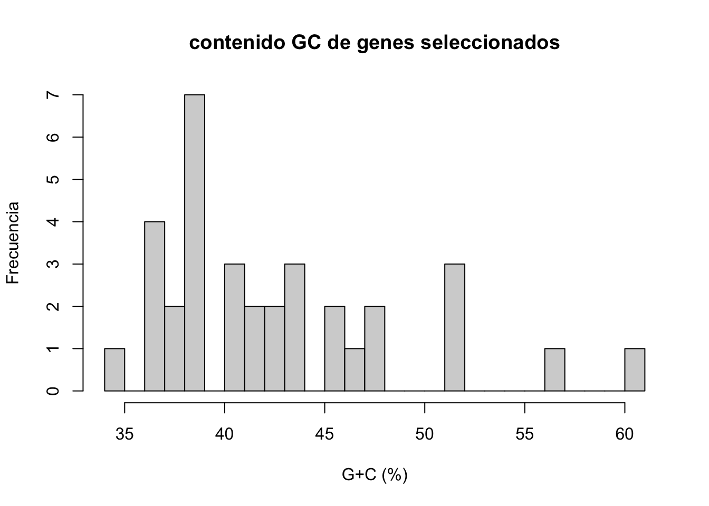
Finalmente, a partir de estos datos vamos a calcular el contenido GC (o G+C) promedio de los genes que pertenecen a cada cromosoma.
# Calcular el contendio GC por cromosoma
boxplot(percentage_gene_gc_content~ chromosome_name,data= algunosgenes,varwidth=TRUE,xlab="Cromosoma",ylab="G+C (%)",col=colors()[sample(1:655,length(unique(algunosgenes$chromosome_name)))])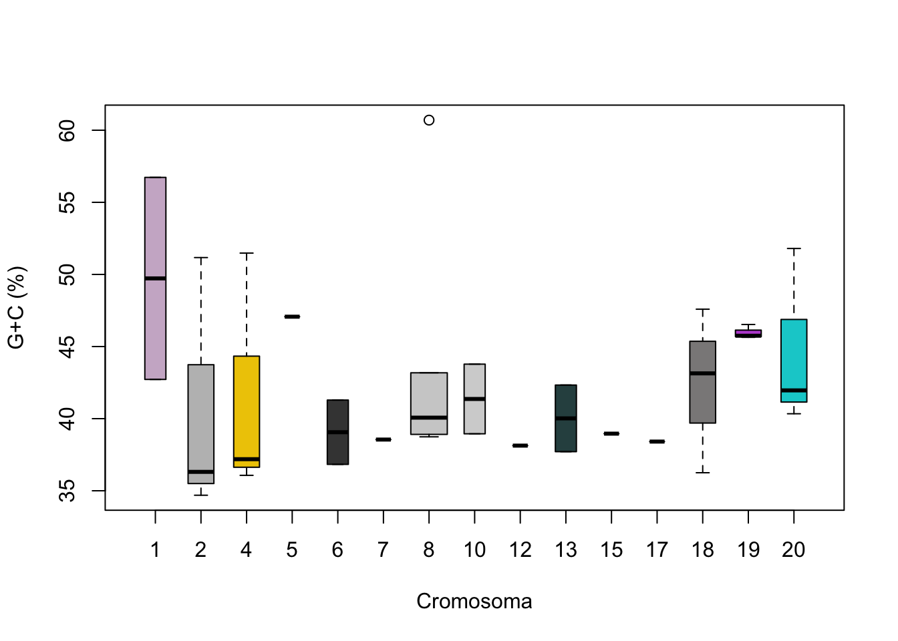
(tag<-aggregate(algunosgenes$percentage_gene_gc_content,by=list("chr"=algunosgenes$chromosome_name),mean))## chr x
## 1 1 49.72500
## 2 2 40.72333
## 3 4 41.58000
## 4 5 47.07000
## 5 6 39.06000
## 6 7 38.55000
## 7 8 43.61167
## 8 10 41.36500
## 9 12 38.13000
## 10 13 40.02000
## 11 15 38.96000
## 12 17 38.41000
## 13 18 42.32667
## 14 19 45.97333
## 15 20 44.700001.12 H-W: la frecuencia de heterocigotas en función de la frecuencia alélica (intro teórica)
En un locus con dos alelos, ¿a qué frecuencia del alelo \(p\) podemos observar la mayor frecuencia de heterocigotas, asumiendo que la población se encuentra en equilibrio de Hardy-Weinberg? La alternativa más sencilla para tener una idea aproximada del comportamiento del número de heterocigotas bajo estos supuestos es graficar la misma como función de \(p\), \(2pq=2p(1-p)\) en cualquier software que permita graficar funciones, calculadora, o aún en una planilla electrónica, por ejemplo generando una serie en el intervalo 0-1. La figura 1.4 es el resultado de graficar esta función, donde se ve que la máxima frecuencia de heterocigotas se encuentra en el entorno de \(p=0,5\), o sea en frecuencias intermedias de los dos alelos y que la máxima proporción de heterocigotas esperable para una población en equilibrio de HW es \(0,5\).
Figura 1.4: Frecuencia de heterocigotas en función de la frecuencia del alelo \(p\) en un modelo de un locus con dos alelos, bajo equilibrio Hardy-Weinberg. En azul la frecuencia de los heterocigotas, rojo y verde los homocigotas.
Una forma más precisa, complementaria con la anterior, es el estudio analítico de esta función. Es decir, dada la función \(f_{Het}(p)=2pq=2p(1-p)=2p-2p^2\), podemos reconocer los extremos relativos (máximos y mínimos) de la misma como los lugares donde la pendiente de la recta tangente es igual a cero, o lo que es equivalente, los puntos donde la derivada primera se hace cero. Por lo tanto, derivando la función obtenemos:
\[\begin{equation} \begin{split} f_{Het}(p)=2pq=2p(1-p)=2p-2p^2\\ \frac{d f_{Het}}{dp}=2-4p\\ 2-4p=0 \Leftrightarrow p=\frac{1}{2} \end{split} \end{equation}\]
Es decir, la función tiene un solo máximo o mínimo en \(p=\frac{1}{2}=0,5\), pero para reconocer de cuál de los dos se trata es necesario ver el signo de la derivada segunda (lo que hacemos volviendo a derivar la derivada primera):
\[\begin{equation} \frac{d^2 f_{Het}(p)}{dp^2}=-4 \end{equation}\]
Como el signo es negativo, se trata de un máximo. Más aún, la forma de función original (\(f_{Het}=2p-2p^2\)) es claramente reconocible como la de una parábola con forma de “U” invertida y cuyas intersecciones con el eje de las abcsisas (raíces) son 0 y 1, por lo que por simetría el vértice debe estar en el punto medio, es decir \(\frac{1}{2}\). Sustituyendo, tenemos:
\[\begin{equation} f_{Het_{max}}(p=\frac{1}{2})=2pq=2 \frac{1}{2} (1-\frac{1}{2})= 2 \frac{1}{2} \frac{1}{2} = \frac{1}{2} \end{equation}\]
Veamos ahora que ocurre con nuestros datos. Para eso vamos a calcular la proporción de genotipos heterocigotas para cada marcador.
HeteSNPs<-apply(ngenot.estan,1,function(x)sum(x==1)/length(x))Ahora, como para cada marcador ya tenemos calculada la frecuencia alélica, podemos “plotear” la frecuencia de heterocigotas observada por marcador, en función de la frecuencia alélica del marcador. Debemos recordar que al tratarese de solo dos alelos por locus, se trata de un problema simétrico respecto a qué alelo elegimos, ya que si uno tienen frecuencia \(p\) el otro tendrá frecuencia \((1-p)\) y la frecuencia esperada de heterocigotos es función \(p(1-p)\) (de hecho, es \(2pq=2p(1-q)\)). Además, podemos plotear (en rojo) la curva teórica de la frecuencia esperada.
plot(freqSNPSpopmas20,HeteSNPs,col="blue",cex=0.2,xlim=c(0,1),ylim=c(0,0.5),ylab="Heterocigotas",xlab="frecuencia alélica")
par(new=TRUE)
curve(2*x*(1-x),0,1,col="red",xlab="",ylab="",xaxt="n",yaxt="n",lwd=1.5)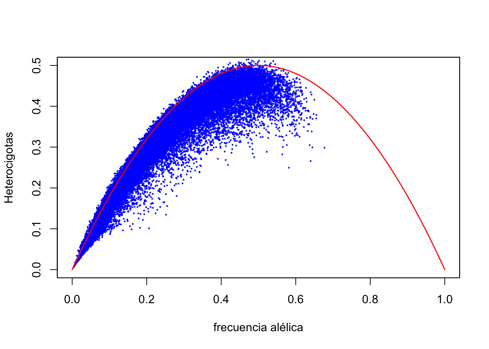
par(new=FALSE)¿Qué observas en este gráfico? ¿La proporción de heterocigotos se distribuye de acuerdo a la curva teórica (considerando la variación aleatoria) o existe un apartamiento sistemático de la misma?
Claramente, como ya lo habíamos discutido antes, existe un apartamiento sistemático, con menor número de heterocigotos que los esperados. ¿A qué se debe este fenómeno?
El fenómeno anterior es producto de la subsidivisión poblacional y está estrechamente relacionado con el efecto “Wahlund” (que a decir verdad es exactamente el fenómeno opuesto) y con los estadísticos \(F\) que veremos más adelante. Cuando en un ensemble de poblaciones, cada una de ellas se encuentra en equilibrio Hardy-Weinberg pero las frecuencias alélicas difieren entre las distintas poblaciones, el ensemble de poblaciones considerado en su conjunto como una sola gran población NO SE ENCUENTRA EN EQUILIBRIO HARDY-WEINBERG, resultando en un falta sistemática de heterocigotas. ¿Cómo puede ser que si cada población se encuentra en equilibrio Hardy-Weinberg el conjunto de individuos no lo esté? La razón es sencilla: las frecuencias esperadas para los genotipos son funciones no lineales de las frecuencias alélicas, es decir \(p_i^2\), \(2p_iq_i\) y \(q_i^2\), por lo que el promedio de las frecuencias alélicas no será un buen estimador del promedio de los genotipos.
1.13 Heterocigosidad
Veamos ahora que ocurre con la proporción de loci heterocigotas para los distintos individuos de nuestra población. Para eso vamos a calcular primero dicha proporción:
HeteIndiv<-apply(ngenot.estan,2,function(x)sum(x==1,na.rm=TRUE)/length(x))
head(HeteIndiv)## HGDP00479 HGDP00985 HGDP01094 HGDP00982 HGDP00911 HGDP01202
## 0.2824911 0.2709695 0.2837819 0.2581296 0.2889179 0.3015106hist(HeteIndiv,80,xlab="Heterocigosidad por individuo",main="",ylab="Frecuencia")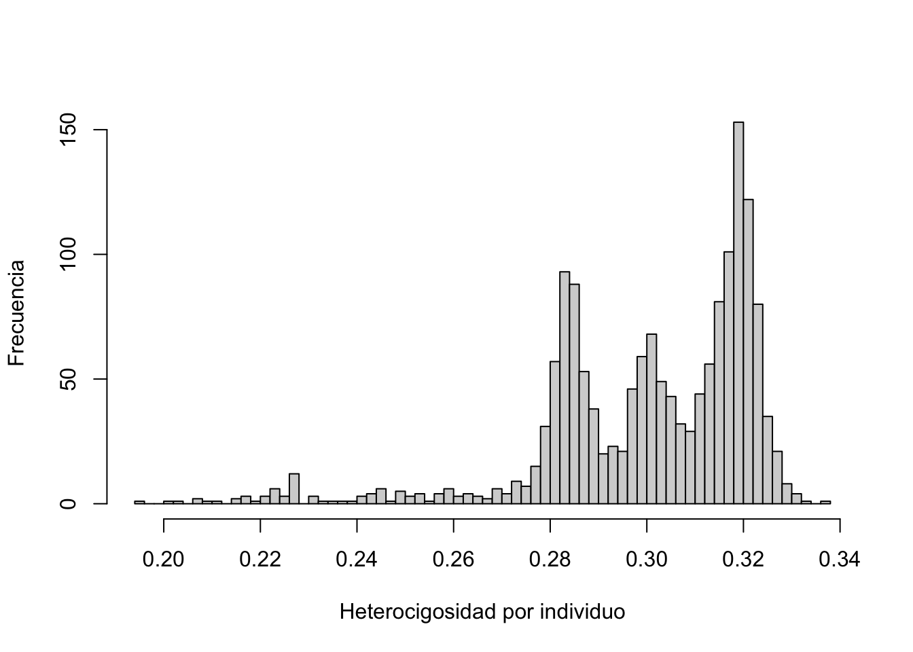
Claramente, al observar el histograma notamos que aparentemente hay diferentes grupos de individuos con diferente nivel de heterocigosidad promedio en sus loci. Veamos si podemos identificar esto con diferentes poblaciones, por ejemplo.
micol<-as.factor(tb$Population.name)
levels(micol)<-colors()[sample(1:665,length(levels(micol)))]
boxplot(HeteIndiv~tb$Population.name,col=levels(micol),varwidth=TRUE,las=2,cex.axis=0.29,xlab="",ylab="Heterocigosidad",outline=FALSE)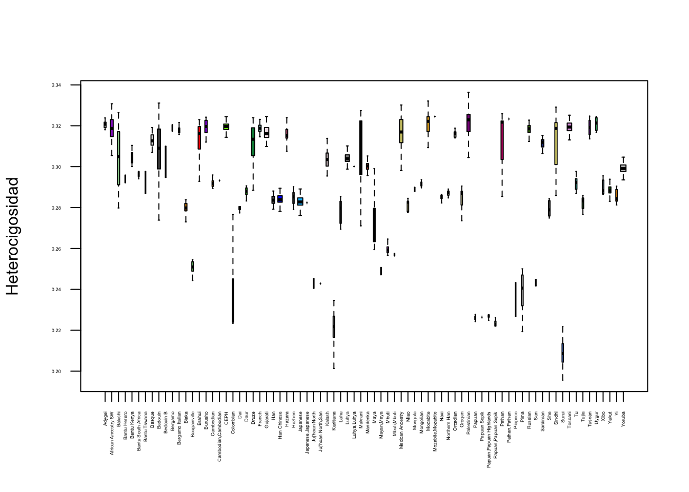
En el boxplot anterior se observa que la distribución de los valores de heterocigosidad es diferente para distintas poblaciones, alguna con valores relativamente bajos. Ahora estamos hablando de la heterocigosidad a nivel de individuos pertenecientes a diferentes poblaciones. Una forma sencilla de cuantificar este efecto (aunque no necesariamente la mejor) es a través de la media para cada población. Veamos si identificamos las poblaciones con menor nivel de heterocigosidad observada.
agHI<-aggregate(HeteIndiv,by=list("Population.name"=tb$Population.name),mean,na.rm=TRUE)
head(agHI[order(agHI$x),],15)## Population.name x
## 69 Surui 0.2087682
## 35 Karitiana 0.2214389
## 59 Papuan,Papuan Sepik 0.2226655
## 56 Papuan 0.2260231
## 57 Papuan Sepik 0.2264213
## 58 Papuan,Papuan Highlands 0.2271697
## 62 Piapoco 0.2349835
## 63 Pima 0.2385757
## 20 Colombian 0.2424252
## 33 Ju|'hoan North,San 0.2428591
## 32 Ju|'hoan North 0.2428660
## 65 San 0.2432573
## 42 Mayan,Maya 0.2489151
## 14 Bougainville 0.2504697
## 44 Mbuti,Mbuti 0.2569555¿Se te ocurre alguna explicación para interpretar las poblaciones que poseen menor heterocigosidad promedio observada?
De hecho, cuando los apareamientos no son aleatorios dentro de la población hay una pérdida de heterocigotos y un aumento consiguiente de los homocigotos. El coeficiente de endogamia F es igual a la probabilidad de que los alelos en un gen cualquiera de un individuo endogámico sean idénticos-por-ascendencia (IBD). En forma equivalente, el coeficiente de endogamia es la proporción de los loci en un individuo endogámico en que los alelos son idénticos-por-ascendencia. Las nuevas frecuencias para una población con un coeficiente de endogamia F estarán dadas por
\[\begin{equation} {fr(A_1A_1)}=p^2(1-F)+pF \\ {fr(A_1A_2)}=2pq(1-F) \\ {fr(A_2A_2)}=q^2(1-F)+qF \end{equation}\]
En poblaciones de tamaño reducido, la endogamia se incrementa (aumenta el apareamiento entre parientes), se incrementa su coeficiente \(F\) y por lo tanto se reduce el número de heterocigotos respecto a lo esperado en ausencia de endogamia ya que \(2pq(1-F)<2pq\). Si observas el ordenamiento de la tabla anterior, se trata de poblaciones de grupos indígenas diezmados con un tamaño poblacional muy reducido, por lo que en la medida de que no exista intercambio genético con otros grupos, la endogamia se incrementará. Este efecto también se puede apreciar a nivel de la super-poblaciones a las que pertenecen los distintos grupos:
micol2<-as.factor(tb$Superpopulation.name)
levels(micol2)<-colors()[sample(1:665,length(levels(micol2)))]
boxplot(HeteIndiv~tb$Superpopulation.name,col=levels(micol2),varwidth=TRUE,las=2,cex.axis=0.5,xlab="",ylab="Heterocigosidad",outline=FALSE)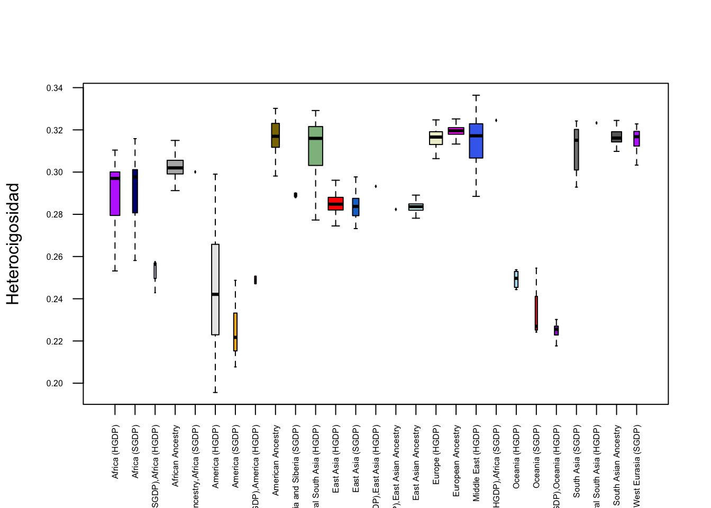
¿Cuáles son las poblaciones con mayor nivel de heterocigosidad? ¿Alguna hipótesis al respecto? Además del tamaño poblacional, ¿qué otros factores pueden incrementar la heterocigosidad (pensar en el fenomeno opuesto al inbreeding)?
References
Aunque la misma ya había sido claramente establecida por Vries (1900) durante el re-descubrimiento de las leyes de Mendel↩︎
Reginald Crundall Punnett, genetista británico que fue quien los desarrolló. Además, Punnett se relaciona directamente con el equilibrio de Hardy-Weinberg, ya que al no poder contrarrestar los argumentos de George Udny Yule acerca del crecimiento sostenido de los alelos dominantes, llevó el problema al matemático Godfrey Harold Hardy, con quien jugaba al cricket; el resto es historia conocida.↩︎